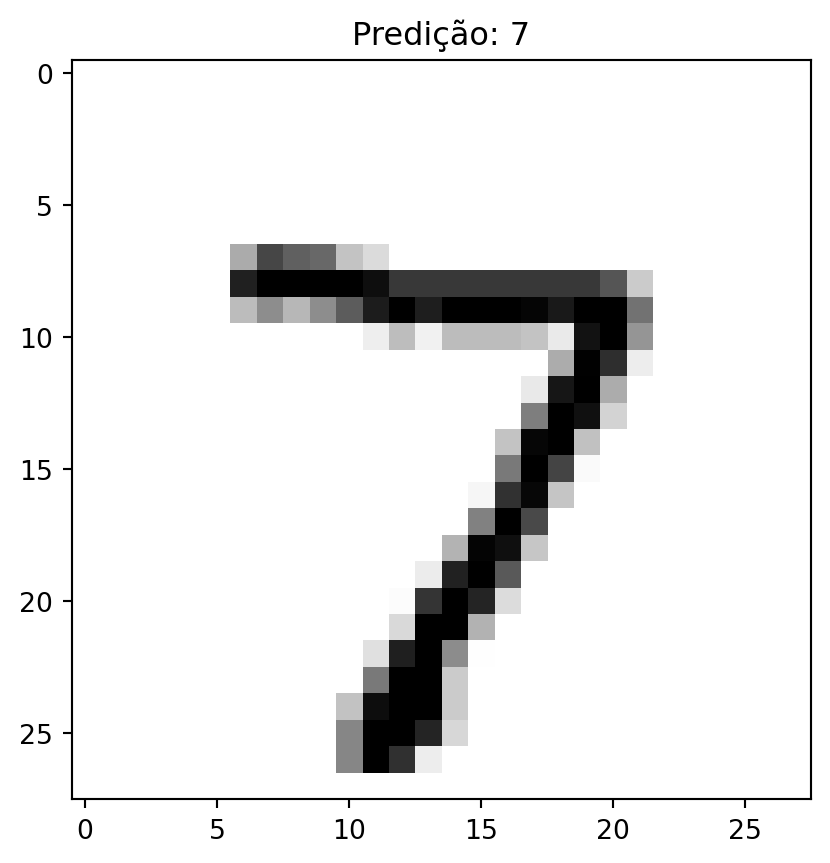
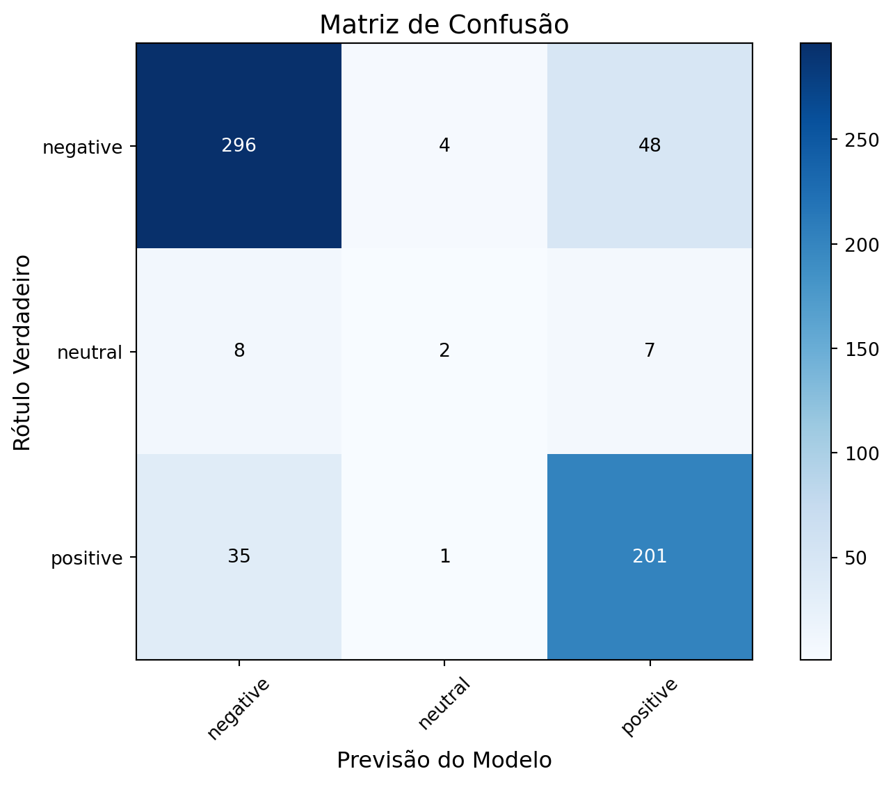

import tensorflow as tf
from tensorflow import keras
import numpy as np
import matplotlib.pyplot as plt
import random
data = keras.datasets.mnist
(x_train, y_train), (x_test, y_test) = data.load_data()
x_train, x_test = x_train / 255.0, x_test / 255.0
model = keras.Sequential([
keras.layers.Flatten(input_shape=(28, 28)),
keras.layers.Dense(70, activation='relu'),
keras.layers.Dense(10, activation='softmax')
])
model.compile(optimizer='adam',
loss='sparse_categorical_crossentropy',
metrics=['accuracy'])Exercicio 2
Mineração de Dados
Aplicando modelos avançados de aprendizado supervisionado
1 MNIST - Reconhecimento de algarismos escritos a mão
epochs = 20
history = model.fit(x_train, y_train, epochs=epochs, validation_data=(x_test, y_test))
loss, accuracy = model.evaluate(x_test, y_test)
print(f'Perda: {loss:.4f}, Acurácia: {accuracy:.4f}')Epoch 1/20
1/1875 [..............................] - ETA: 25:34 - loss: 2.5252 - accuracy: 0.0625 17/1875 [..............................] - ETA: 5s - loss: 1.9971 - accuracy: 0.3989 31/1875 [..............................] - ETA: 6s - loss: 1.7121 - accuracy: 0.5292 48/1875 [..............................] - ETA: 6s - loss: 1.4558 - accuracy: 0.6191 68/1875 [>.............................] - ETA: 5s - loss: 1.2447 - accuracy: 0.6650 90/1875 [>.............................] - ETA: 5s - loss: 1.0831 - accuracy: 0.7108 112/1875 [>.............................] - ETA: 4s - loss: 0.9689 - accuracy: 0.7419 131/1875 [=>............................] - ETA: 4s - loss: 0.9056 - accuracy: 0.7574 145/1875 [=>............................] - ETA: 4s - loss: 0.8626 - accuracy: 0.7688 161/1875 [=>............................] - ETA: 5s - loss: 0.8205 - accuracy: 0.7789 178/1875 [=>............................] - ETA: 4s - loss: 0.7800 - accuracy: 0.7904 195/1875 [==>...........................] - ETA: 4s - loss: 0.7522 - accuracy: 0.7974 213/1875 [==>...........................] - ETA: 4s - loss: 0.7220 - accuracy: 0.8049 228/1875 [==>...........................] - ETA: 4s - loss: 0.6973 - accuracy: 0.8110 246/1875 [==>...........................] - ETA: 4s - loss: 0.6755 - accuracy: 0.8169 265/1875 [===>..........................] - ETA: 4s - loss: 0.6571 - accuracy: 0.8216 286/1875 [===>..........................] - ETA: 4s - loss: 0.6358 - accuracy: 0.8262 305/1875 [===>..........................] - ETA: 4s - loss: 0.6158 - accuracy: 0.8309 327/1875 [====>.........................] - ETA: 4s - loss: 0.5952 - accuracy: 0.8371 348/1875 [====>.........................] - ETA: 4s - loss: 0.5763 - accuracy: 0.8423 367/1875 [====>.........................] - ETA: 4s - loss: 0.5647 - accuracy: 0.8453 381/1875 [=====>........................] - ETA: 4s - loss: 0.5576 - accuracy: 0.8472 397/1875 [=====>........................] - ETA: 4s - loss: 0.5487 - accuracy: 0.8493 420/1875 [=====>........................] - ETA: 4s - loss: 0.5374 - accuracy: 0.8528 440/1875 [======>.......................] - ETA: 4s - loss: 0.5261 - accuracy: 0.8554 462/1875 [======>.......................] - ETA: 3s - loss: 0.5165 - accuracy: 0.8581 485/1875 [======>.......................] - ETA: 3s - loss: 0.5076 - accuracy: 0.8613 508/1875 [=======>......................] - ETA: 3s - loss: 0.4984 - accuracy: 0.8640 530/1875 [=======>......................] - ETA: 3s - loss: 0.4901 - accuracy: 0.8660 552/1875 [=======>......................] - ETA: 3s - loss: 0.4805 - accuracy: 0.8682 574/1875 [========>.....................] - ETA: 3s - loss: 0.4737 - accuracy: 0.8697 598/1875 [========>.....................] - ETA: 3s - loss: 0.4657 - accuracy: 0.8721 618/1875 [========>.....................] - ETA: 3s - loss: 0.4602 - accuracy: 0.8734 640/1875 [=========>....................] - ETA: 3s - loss: 0.4529 - accuracy: 0.8754 663/1875 [=========>....................] - ETA: 3s - loss: 0.4446 - accuracy: 0.8775 687/1875 [=========>....................] - ETA: 3s - loss: 0.4373 - accuracy: 0.8794 712/1875 [==========>...................] - ETA: 3s - loss: 0.4310 - accuracy: 0.8812 730/1875 [==========>...................] - ETA: 2s - loss: 0.4271 - accuracy: 0.8821 750/1875 [===========>..................] - ETA: 2s - loss: 0.4241 - accuracy: 0.8830 771/1875 [===========>..................] - ETA: 2s - loss: 0.4203 - accuracy: 0.8841 794/1875 [===========>..................] - ETA: 2s - loss: 0.4160 - accuracy: 0.8852 816/1875 [============>.................] - ETA: 2s - loss: 0.4123 - accuracy: 0.8858 838/1875 [============>.................] - ETA: 2s - loss: 0.4079 - accuracy: 0.8870 860/1875 [============>.................] - ETA: 2s - loss: 0.4027 - accuracy: 0.8884 883/1875 [=============>................] - ETA: 2s - loss: 0.3980 - accuracy: 0.8895 905/1875 [=============>................] - ETA: 2s - loss: 0.3932 - accuracy: 0.8908 927/1875 [=============>................] - ETA: 2s - loss: 0.3913 - accuracy: 0.8913 950/1875 [==============>...............] - ETA: 2s - loss: 0.3873 - accuracy: 0.8927 974/1875 [==============>...............] - ETA: 2s - loss: 0.3840 - accuracy: 0.8931 996/1875 [==============>...............] - ETA: 2s - loss: 0.3822 - accuracy: 0.89361019/1875 [===============>..............] - ETA: 2s - loss: 0.3795 - accuracy: 0.89441042/1875 [===============>..............] - ETA: 2s - loss: 0.3754 - accuracy: 0.89561065/1875 [================>.............] - ETA: 2s - loss: 0.3717 - accuracy: 0.89671089/1875 [================>.............] - ETA: 1s - loss: 0.3684 - accuracy: 0.89741111/1875 [================>.............] - ETA: 1s - loss: 0.3658 - accuracy: 0.89821133/1875 [=================>............] - ETA: 1s - loss: 0.3632 - accuracy: 0.89881157/1875 [=================>............] - ETA: 1s - loss: 0.3603 - accuracy: 0.89981181/1875 [=================>............] - ETA: 1s - loss: 0.3575 - accuracy: 0.90041196/1875 [==================>...........] - ETA: 1s - loss: 0.3560 - accuracy: 0.90091217/1875 [==================>...........] - ETA: 1s - loss: 0.3526 - accuracy: 0.90181240/1875 [==================>...........] - ETA: 1s - loss: 0.3504 - accuracy: 0.90221264/1875 [===================>..........] - ETA: 1s - loss: 0.3482 - accuracy: 0.90291288/1875 [===================>..........] - ETA: 1s - loss: 0.3459 - accuracy: 0.90361311/1875 [===================>..........] - ETA: 1s - loss: 0.3438 - accuracy: 0.90411333/1875 [====================>.........] - ETA: 1s - loss: 0.3418 - accuracy: 0.90471356/1875 [====================>.........] - ETA: 1s - loss: 0.3389 - accuracy: 0.90561380/1875 [=====================>........] - ETA: 1s - loss: 0.3366 - accuracy: 0.90621398/1875 [=====================>........] - ETA: 1s - loss: 0.3351 - accuracy: 0.90661419/1875 [=====================>........] - ETA: 1s - loss: 0.3327 - accuracy: 0.90721441/1875 [======================>.......] - ETA: 1s - loss: 0.3307 - accuracy: 0.90781465/1875 [======================>.......] - ETA: 1s - loss: 0.3281 - accuracy: 0.90861488/1875 [======================>.......] - ETA: 0s - loss: 0.3254 - accuracy: 0.90931512/1875 [=======================>......] - ETA: 0s - loss: 0.3227 - accuracy: 0.90991536/1875 [=======================>......] - ETA: 0s - loss: 0.3203 - accuracy: 0.91051561/1875 [=======================>......] - ETA: 0s - loss: 0.3180 - accuracy: 0.91131585/1875 [========================>.....] - ETA: 0s - loss: 0.3160 - accuracy: 0.91181609/1875 [========================>.....] - ETA: 0s - loss: 0.3142 - accuracy: 0.91231632/1875 [=========================>....] - ETA: 0s - loss: 0.3121 - accuracy: 0.91291655/1875 [=========================>....] - ETA: 0s - loss: 0.3102 - accuracy: 0.91341678/1875 [=========================>....] - ETA: 0s - loss: 0.3084 - accuracy: 0.91391702/1875 [==========================>...] - ETA: 0s - loss: 0.3068 - accuracy: 0.91441723/1875 [==========================>...] - ETA: 0s - loss: 0.3062 - accuracy: 0.91471746/1875 [==========================>...] - ETA: 0s - loss: 0.3045 - accuracy: 0.91511770/1875 [===========================>..] - ETA: 0s - loss: 0.3027 - accuracy: 0.91561794/1875 [===========================>..] - ETA: 0s - loss: 0.3013 - accuracy: 0.91601817/1875 [============================>.] - ETA: 0s - loss: 0.2994 - accuracy: 0.91651839/1875 [============================>.] - ETA: 0s - loss: 0.2979 - accuracy: 0.91681862/1875 [============================>.] - ETA: 0s - loss: 0.2962 - accuracy: 0.91741875/1875 [==============================] - 6s 3ms/step - loss: 0.2951 - accuracy: 0.9177 - val_loss: 0.1643 - val_accuracy: 0.9520
Epoch 2/20
1/1875 [..............................] - ETA: 8s - loss: 0.0113 - accuracy: 1.0000 23/1875 [..............................] - ETA: 4s - loss: 0.1549 - accuracy: 0.9552 46/1875 [..............................] - ETA: 4s - loss: 0.1586 - accuracy: 0.9572 68/1875 [>.............................] - ETA: 4s - loss: 0.1621 - accuracy: 0.9527 92/1875 [>.............................] - ETA: 4s - loss: 0.1691 - accuracy: 0.9531 115/1875 [>.............................] - ETA: 3s - loss: 0.1664 - accuracy: 0.9524 138/1875 [=>............................] - ETA: 3s - loss: 0.1664 - accuracy: 0.9527 160/1875 [=>............................] - ETA: 3s - loss: 0.1629 - accuracy: 0.9537 183/1875 [=>............................] - ETA: 3s - loss: 0.1662 - accuracy: 0.9527 201/1875 [==>...........................] - ETA: 3s - loss: 0.1636 - accuracy: 0.9532 218/1875 [==>...........................] - ETA: 3s - loss: 0.1639 - accuracy: 0.9530 237/1875 [==>...........................] - ETA: 3s - loss: 0.1603 - accuracy: 0.9541 258/1875 [===>..........................] - ETA: 3s - loss: 0.1628 - accuracy: 0.9534 280/1875 [===>..........................] - ETA: 3s - loss: 0.1596 - accuracy: 0.9546 304/1875 [===>..........................] - ETA: 3s - loss: 0.1601 - accuracy: 0.9544 327/1875 [====>.........................] - ETA: 3s - loss: 0.1594 - accuracy: 0.9544 352/1875 [====>.........................] - ETA: 3s - loss: 0.1590 - accuracy: 0.9542 375/1875 [=====>........................] - ETA: 3s - loss: 0.1586 - accuracy: 0.9539 397/1875 [=====>........................] - ETA: 3s - loss: 0.1628 - accuracy: 0.9535 420/1875 [=====>........................] - ETA: 3s - loss: 0.1624 - accuracy: 0.9536 443/1875 [======>.......................] - ETA: 3s - loss: 0.1599 - accuracy: 0.9545 464/1875 [======>.......................] - ETA: 3s - loss: 0.1584 - accuracy: 0.9547 488/1875 [======>.......................] - ETA: 3s - loss: 0.1582 - accuracy: 0.9547 511/1875 [=======>......................] - ETA: 3s - loss: 0.1568 - accuracy: 0.9553 535/1875 [=======>......................] - ETA: 3s - loss: 0.1567 - accuracy: 0.9554 556/1875 [=======>......................] - ETA: 3s - loss: 0.1552 - accuracy: 0.9559 580/1875 [========>.....................] - ETA: 2s - loss: 0.1564 - accuracy: 0.9557 604/1875 [========>.....................] - ETA: 2s - loss: 0.1555 - accuracy: 0.9558 626/1875 [=========>....................] - ETA: 2s - loss: 0.1562 - accuracy: 0.9554 651/1875 [=========>....................] - ETA: 2s - loss: 0.1560 - accuracy: 0.9553 674/1875 [=========>....................] - ETA: 2s - loss: 0.1559 - accuracy: 0.9554 697/1875 [==========>...................] - ETA: 2s - loss: 0.1544 - accuracy: 0.9556 717/1875 [==========>...................] - ETA: 2s - loss: 0.1548 - accuracy: 0.9558 742/1875 [==========>...................] - ETA: 2s - loss: 0.1540 - accuracy: 0.9560 764/1875 [===========>..................] - ETA: 2s - loss: 0.1534 - accuracy: 0.9562 788/1875 [===========>..................] - ETA: 2s - loss: 0.1537 - accuracy: 0.9561 812/1875 [===========>..................] - ETA: 2s - loss: 0.1532 - accuracy: 0.9561 835/1875 [============>.................] - ETA: 2s - loss: 0.1527 - accuracy: 0.9563 859/1875 [============>.................] - ETA: 2s - loss: 0.1520 - accuracy: 0.9564 882/1875 [=============>................] - ETA: 2s - loss: 0.1530 - accuracy: 0.9560 905/1875 [=============>................] - ETA: 2s - loss: 0.1530 - accuracy: 0.9560 929/1875 [=============>................] - ETA: 2s - loss: 0.1528 - accuracy: 0.9560 952/1875 [==============>...............] - ETA: 2s - loss: 0.1523 - accuracy: 0.9559 974/1875 [==============>...............] - ETA: 2s - loss: 0.1519 - accuracy: 0.9560 995/1875 [==============>...............] - ETA: 2s - loss: 0.1517 - accuracy: 0.95621016/1875 [===============>..............] - ETA: 1s - loss: 0.1510 - accuracy: 0.95641041/1875 [===============>..............] - ETA: 1s - loss: 0.1500 - accuracy: 0.95671064/1875 [================>.............] - ETA: 1s - loss: 0.1500 - accuracy: 0.95671086/1875 [================>.............] - ETA: 1s - loss: 0.1494 - accuracy: 0.95691110/1875 [================>.............] - ETA: 1s - loss: 0.1497 - accuracy: 0.95661132/1875 [=================>............] - ETA: 1s - loss: 0.1490 - accuracy: 0.95681154/1875 [=================>............] - ETA: 1s - loss: 0.1489 - accuracy: 0.95681176/1875 [=================>............] - ETA: 1s - loss: 0.1488 - accuracy: 0.95701198/1875 [==================>...........] - ETA: 1s - loss: 0.1483 - accuracy: 0.95721221/1875 [==================>...........] - ETA: 1s - loss: 0.1478 - accuracy: 0.95721245/1875 [==================>...........] - ETA: 1s - loss: 0.1478 - accuracy: 0.95731267/1875 [===================>..........] - ETA: 1s - loss: 0.1473 - accuracy: 0.95721290/1875 [===================>..........] - ETA: 1s - loss: 0.1469 - accuracy: 0.95721311/1875 [===================>..........] - ETA: 1s - loss: 0.1468 - accuracy: 0.95721334/1875 [====================>.........] - ETA: 1s - loss: 0.1464 - accuracy: 0.95731354/1875 [====================>.........] - ETA: 1s - loss: 0.1463 - accuracy: 0.95731378/1875 [=====================>........] - ETA: 1s - loss: 0.1461 - accuracy: 0.95721399/1875 [=====================>........] - ETA: 1s - loss: 0.1462 - accuracy: 0.95721422/1875 [=====================>........] - ETA: 1s - loss: 0.1458 - accuracy: 0.95741446/1875 [======================>.......] - ETA: 0s - loss: 0.1454 - accuracy: 0.95751470/1875 [======================>.......] - ETA: 0s - loss: 0.1454 - accuracy: 0.95761493/1875 [======================>.......] - ETA: 0s - loss: 0.1449 - accuracy: 0.95771517/1875 [=======================>......] - ETA: 0s - loss: 0.1451 - accuracy: 0.95761539/1875 [=======================>......] - ETA: 0s - loss: 0.1451 - accuracy: 0.95771561/1875 [=======================>......] - ETA: 0s - loss: 0.1449 - accuracy: 0.95761583/1875 [========================>.....] - ETA: 0s - loss: 0.1445 - accuracy: 0.95781605/1875 [========================>.....] - ETA: 0s - loss: 0.1450 - accuracy: 0.95761627/1875 [=========================>....] - ETA: 0s - loss: 0.1447 - accuracy: 0.95771650/1875 [=========================>....] - ETA: 0s - loss: 0.1447 - accuracy: 0.95761669/1875 [=========================>....] - ETA: 0s - loss: 0.1444 - accuracy: 0.95771692/1875 [==========================>...] - ETA: 0s - loss: 0.1441 - accuracy: 0.95791712/1875 [==========================>...] - ETA: 0s - loss: 0.1442 - accuracy: 0.95781734/1875 [==========================>...] - ETA: 0s - loss: 0.1444 - accuracy: 0.95781755/1875 [===========================>..] - ETA: 0s - loss: 0.1441 - accuracy: 0.95781777/1875 [===========================>..] - ETA: 0s - loss: 0.1435 - accuracy: 0.95801800/1875 [===========================>..] - ETA: 0s - loss: 0.1429 - accuracy: 0.95821807/1875 [===========================>..] - ETA: 0s - loss: 0.1427 - accuracy: 0.95821812/1875 [===========================>..] - ETA: 0s - loss: 0.1426 - accuracy: 0.95821826/1875 [============================>.] - ETA: 0s - loss: 0.1426 - accuracy: 0.95811846/1875 [============================>.] - ETA: 0s - loss: 0.1423 - accuracy: 0.95831865/1875 [============================>.] - ETA: 0s - loss: 0.1421 - accuracy: 0.95831875/1875 [==============================] - 5s 3ms/step - loss: 0.1420 - accuracy: 0.9584 - val_loss: 0.1213 - val_accuracy: 0.9651
Epoch 3/20
1/1875 [..............................] - ETA: 8s - loss: 0.0387 - accuracy: 1.0000 21/1875 [..............................] - ETA: 4s - loss: 0.0818 - accuracy: 0.9807 43/1875 [..............................] - ETA: 4s - loss: 0.1001 - accuracy: 0.9760 65/1875 [>.............................] - ETA: 4s - loss: 0.1092 - accuracy: 0.9697 86/1875 [>.............................] - ETA: 4s - loss: 0.1002 - accuracy: 0.9738 106/1875 [>.............................] - ETA: 4s - loss: 0.0996 - accuracy: 0.9741 129/1875 [=>............................] - ETA: 4s - loss: 0.0975 - accuracy: 0.9734 152/1875 [=>............................] - ETA: 4s - loss: 0.0981 - accuracy: 0.9725 174/1875 [=>............................] - ETA: 4s - loss: 0.0980 - accuracy: 0.9727 197/1875 [==>...........................] - ETA: 3s - loss: 0.0986 - accuracy: 0.9729 219/1875 [==>...........................] - ETA: 3s - loss: 0.0983 - accuracy: 0.9735 236/1875 [==>...........................] - ETA: 3s - loss: 0.0976 - accuracy: 0.9739 257/1875 [===>..........................] - ETA: 3s - loss: 0.0944 - accuracy: 0.9747 280/1875 [===>..........................] - ETA: 3s - loss: 0.0942 - accuracy: 0.9742 303/1875 [===>..........................] - ETA: 3s - loss: 0.0957 - accuracy: 0.9736 322/1875 [====>.........................] - ETA: 3s - loss: 0.0947 - accuracy: 0.9738 343/1875 [====>.........................] - ETA: 3s - loss: 0.0950 - accuracy: 0.9737 366/1875 [====>.........................] - ETA: 3s - loss: 0.0945 - accuracy: 0.9739 387/1875 [=====>........................] - ETA: 3s - loss: 0.0959 - accuracy: 0.9736 411/1875 [=====>........................] - ETA: 3s - loss: 0.0958 - accuracy: 0.9731 435/1875 [=====>........................] - ETA: 3s - loss: 0.0959 - accuracy: 0.9726 457/1875 [======>.......................] - ETA: 3s - loss: 0.0962 - accuracy: 0.9725 481/1875 [======>.......................] - ETA: 3s - loss: 0.0975 - accuracy: 0.9719 504/1875 [=======>......................] - ETA: 3s - loss: 0.0976 - accuracy: 0.9717 527/1875 [=======>......................] - ETA: 3s - loss: 0.0997 - accuracy: 0.9709 548/1875 [=======>......................] - ETA: 3s - loss: 0.1000 - accuracy: 0.9706 560/1875 [=======>......................] - ETA: 3s - loss: 0.0997 - accuracy: 0.9708 565/1875 [========>.....................] - ETA: 3s - loss: 0.0999 - accuracy: 0.9708 574/1875 [========>.....................] - ETA: 3s - loss: 0.0993 - accuracy: 0.9710 592/1875 [========>.....................] - ETA: 3s - loss: 0.1007 - accuracy: 0.9703 609/1875 [========>.....................] - ETA: 3s - loss: 0.1000 - accuracy: 0.9705 623/1875 [========>.....................] - ETA: 3s - loss: 0.1000 - accuracy: 0.9705 640/1875 [=========>....................] - ETA: 3s - loss: 0.0996 - accuracy: 0.9705 660/1875 [=========>....................] - ETA: 3s - loss: 0.0999 - accuracy: 0.9703 673/1875 [=========>....................] - ETA: 3s - loss: 0.1010 - accuracy: 0.9699 698/1875 [==========>...................] - ETA: 3s - loss: 0.1014 - accuracy: 0.9700 723/1875 [==========>...................] - ETA: 2s - loss: 0.1014 - accuracy: 0.9700 745/1875 [==========>...................] - ETA: 2s - loss: 0.1012 - accuracy: 0.9702 765/1875 [===========>..................] - ETA: 2s - loss: 0.1013 - accuracy: 0.9703 782/1875 [===========>..................] - ETA: 2s - loss: 0.1020 - accuracy: 0.9698 796/1875 [===========>..................] - ETA: 2s - loss: 0.1031 - accuracy: 0.9696 813/1875 [============>.................] - ETA: 2s - loss: 0.1030 - accuracy: 0.9697 830/1875 [============>.................] - ETA: 2s - loss: 0.1025 - accuracy: 0.9697 848/1875 [============>.................] - ETA: 2s - loss: 0.1025 - accuracy: 0.9698 866/1875 [============>.................] - ETA: 2s - loss: 0.1021 - accuracy: 0.9699 881/1875 [=============>................] - ETA: 2s - loss: 0.1018 - accuracy: 0.9700 898/1875 [=============>................] - ETA: 2s - loss: 0.1013 - accuracy: 0.9702 915/1875 [=============>................] - ETA: 2s - loss: 0.1012 - accuracy: 0.9703 928/1875 [=============>................] - ETA: 2s - loss: 0.1015 - accuracy: 0.9702 938/1875 [==============>...............] - ETA: 2s - loss: 0.1013 - accuracy: 0.9703 950/1875 [==============>...............] - ETA: 2s - loss: 0.1013 - accuracy: 0.9703 956/1875 [==============>...............] - ETA: 2s - loss: 0.1015 - accuracy: 0.9702 970/1875 [==============>...............] - ETA: 2s - loss: 0.1015 - accuracy: 0.9702 987/1875 [==============>...............] - ETA: 2s - loss: 0.1020 - accuracy: 0.97001010/1875 [===============>..............] - ETA: 2s - loss: 0.1011 - accuracy: 0.97021032/1875 [===============>..............] - ETA: 2s - loss: 0.1005 - accuracy: 0.97041056/1875 [===============>..............] - ETA: 2s - loss: 0.1006 - accuracy: 0.97031080/1875 [================>.............] - ETA: 2s - loss: 0.1010 - accuracy: 0.97021103/1875 [================>.............] - ETA: 2s - loss: 0.1013 - accuracy: 0.96991132/1875 [=================>............] - ETA: 2s - loss: 0.1017 - accuracy: 0.96981162/1875 [=================>............] - ETA: 1s - loss: 0.1027 - accuracy: 0.96941192/1875 [==================>...........] - ETA: 1s - loss: 0.1021 - accuracy: 0.96951218/1875 [==================>...........] - ETA: 1s - loss: 0.1022 - accuracy: 0.96951241/1875 [==================>...........] - ETA: 1s - loss: 0.1018 - accuracy: 0.96971261/1875 [===================>..........] - ETA: 1s - loss: 0.1023 - accuracy: 0.96971284/1875 [===================>..........] - ETA: 1s - loss: 0.1030 - accuracy: 0.96951308/1875 [===================>..........] - ETA: 1s - loss: 0.1030 - accuracy: 0.96951331/1875 [====================>.........] - ETA: 1s - loss: 0.1027 - accuracy: 0.96971355/1875 [====================>.........] - ETA: 1s - loss: 0.1028 - accuracy: 0.96951378/1875 [=====================>........] - ETA: 1s - loss: 0.1026 - accuracy: 0.96951405/1875 [=====================>........] - ETA: 1s - loss: 0.1028 - accuracy: 0.96961426/1875 [=====================>........] - ETA: 1s - loss: 0.1030 - accuracy: 0.96951451/1875 [======================>.......] - ETA: 1s - loss: 0.1028 - accuracy: 0.96941477/1875 [======================>.......] - ETA: 1s - loss: 0.1029 - accuracy: 0.96951505/1875 [=======================>......] - ETA: 0s - loss: 0.1029 - accuracy: 0.96951528/1875 [=======================>......] - ETA: 0s - loss: 0.1025 - accuracy: 0.96961551/1875 [=======================>......] - ETA: 0s - loss: 0.1025 - accuracy: 0.96961572/1875 [========================>.....] - ETA: 0s - loss: 0.1025 - accuracy: 0.96961592/1875 [========================>.....] - ETA: 0s - loss: 0.1025 - accuracy: 0.96951613/1875 [========================>.....] - ETA: 0s - loss: 0.1022 - accuracy: 0.96961635/1875 [=========================>....] - ETA: 0s - loss: 0.1022 - accuracy: 0.96961660/1875 [=========================>....] - ETA: 0s - loss: 0.1020 - accuracy: 0.96971686/1875 [=========================>....] - ETA: 0s - loss: 0.1015 - accuracy: 0.96981710/1875 [==========================>...] - ETA: 0s - loss: 0.1010 - accuracy: 0.97001732/1875 [==========================>...] - ETA: 0s - loss: 0.1007 - accuracy: 0.97001758/1875 [===========================>..] - ETA: 0s - loss: 0.1005 - accuracy: 0.97011786/1875 [===========================>..] - ETA: 0s - loss: 0.1010 - accuracy: 0.97001816/1875 [============================>.] - ETA: 0s - loss: 0.1010 - accuracy: 0.97001847/1875 [============================>.] - ETA: 0s - loss: 0.1009 - accuracy: 0.97001874/1875 [============================>.] - ETA: 0s - loss: 0.1006 - accuracy: 0.97011875/1875 [==============================] - 5s 3ms/step - loss: 0.1006 - accuracy: 0.9700 - val_loss: 0.0973 - val_accuracy: 0.9716
Epoch 4/20
1/1875 [..............................] - ETA: 7s - loss: 0.0423 - accuracy: 0.9688 27/1875 [..............................] - ETA: 3s - loss: 0.0568 - accuracy: 0.9815 51/1875 [..............................] - ETA: 3s - loss: 0.0714 - accuracy: 0.9786 75/1875 [>.............................] - ETA: 3s - loss: 0.0738 - accuracy: 0.9771 99/1875 [>.............................] - ETA: 3s - loss: 0.0733 - accuracy: 0.9766 125/1875 [=>............................] - ETA: 3s - loss: 0.0712 - accuracy: 0.9772 153/1875 [=>............................] - ETA: 3s - loss: 0.0728 - accuracy: 0.9765 178/1875 [=>............................] - ETA: 3s - loss: 0.0737 - accuracy: 0.9774 202/1875 [==>...........................] - ETA: 3s - loss: 0.0748 - accuracy: 0.9782 232/1875 [==>...........................] - ETA: 3s - loss: 0.0781 - accuracy: 0.9774 260/1875 [===>..........................] - ETA: 3s - loss: 0.0776 - accuracy: 0.9774 284/1875 [===>..........................] - ETA: 3s - loss: 0.0780 - accuracy: 0.9774 306/1875 [===>..........................] - ETA: 3s - loss: 0.0787 - accuracy: 0.9772 330/1875 [====>.........................] - ETA: 3s - loss: 0.0779 - accuracy: 0.9774 355/1875 [====>.........................] - ETA: 3s - loss: 0.0782 - accuracy: 0.9775 380/1875 [=====>........................] - ETA: 3s - loss: 0.0784 - accuracy: 0.9773 404/1875 [=====>........................] - ETA: 2s - loss: 0.0786 - accuracy: 0.9769 427/1875 [=====>........................] - ETA: 2s - loss: 0.0789 - accuracy: 0.9769 453/1875 [======>.......................] - ETA: 2s - loss: 0.0787 - accuracy: 0.9768 481/1875 [======>.......................] - ETA: 2s - loss: 0.0789 - accuracy: 0.9764 499/1875 [======>.......................] - ETA: 2s - loss: 0.0794 - accuracy: 0.9763 527/1875 [=======>......................] - ETA: 2s - loss: 0.0786 - accuracy: 0.9764 547/1875 [=======>......................] - ETA: 2s - loss: 0.0791 - accuracy: 0.9763 575/1875 [========>.....................] - ETA: 2s - loss: 0.0783 - accuracy: 0.9767 602/1875 [========>.....................] - ETA: 2s - loss: 0.0785 - accuracy: 0.9767 632/1875 [=========>....................] - ETA: 2s - loss: 0.0779 - accuracy: 0.9769 663/1875 [=========>....................] - ETA: 2s - loss: 0.0776 - accuracy: 0.9768 691/1875 [==========>...................] - ETA: 2s - loss: 0.0771 - accuracy: 0.9770 721/1875 [==========>...................] - ETA: 2s - loss: 0.0771 - accuracy: 0.9770 751/1875 [===========>..................] - ETA: 2s - loss: 0.0777 - accuracy: 0.9765 773/1875 [===========>..................] - ETA: 2s - loss: 0.0785 - accuracy: 0.9762 797/1875 [===========>..................] - ETA: 2s - loss: 0.0794 - accuracy: 0.9762 820/1875 [============>.................] - ETA: 2s - loss: 0.0798 - accuracy: 0.9762 843/1875 [============>.................] - ETA: 2s - loss: 0.0797 - accuracy: 0.9763 865/1875 [============>.................] - ETA: 2s - loss: 0.0797 - accuracy: 0.9763 889/1875 [=============>................] - ETA: 1s - loss: 0.0792 - accuracy: 0.9763 914/1875 [=============>................] - ETA: 1s - loss: 0.0792 - accuracy: 0.9764 938/1875 [==============>...............] - ETA: 1s - loss: 0.0788 - accuracy: 0.9763 966/1875 [==============>...............] - ETA: 1s - loss: 0.0793 - accuracy: 0.9762 993/1875 [==============>...............] - ETA: 1s - loss: 0.0793 - accuracy: 0.97621021/1875 [===============>..............] - ETA: 1s - loss: 0.0796 - accuracy: 0.97601045/1875 [===============>..............] - ETA: 1s - loss: 0.0799 - accuracy: 0.97591069/1875 [================>.............] - ETA: 1s - loss: 0.0798 - accuracy: 0.97601094/1875 [================>.............] - ETA: 1s - loss: 0.0797 - accuracy: 0.97601119/1875 [================>.............] - ETA: 1s - loss: 0.0803 - accuracy: 0.97591146/1875 [=================>............] - ETA: 1s - loss: 0.0800 - accuracy: 0.97621170/1875 [=================>............] - ETA: 1s - loss: 0.0800 - accuracy: 0.97601193/1875 [==================>...........] - ETA: 1s - loss: 0.0796 - accuracy: 0.97621201/1875 [==================>...........] - ETA: 1s - loss: 0.0795 - accuracy: 0.97621214/1875 [==================>...........] - ETA: 1s - loss: 0.0796 - accuracy: 0.97611224/1875 [==================>...........] - ETA: 1s - loss: 0.0796 - accuracy: 0.97601242/1875 [==================>...........] - ETA: 1s - loss: 0.0791 - accuracy: 0.97611257/1875 [===================>..........] - ETA: 1s - loss: 0.0791 - accuracy: 0.97611272/1875 [===================>..........] - ETA: 1s - loss: 0.0790 - accuracy: 0.97611288/1875 [===================>..........] - ETA: 1s - loss: 0.0792 - accuracy: 0.97601304/1875 [===================>..........] - ETA: 1s - loss: 0.0791 - accuracy: 0.97601321/1875 [====================>.........] - ETA: 1s - loss: 0.0788 - accuracy: 0.97611341/1875 [====================>.........] - ETA: 1s - loss: 0.0787 - accuracy: 0.97611362/1875 [====================>.........] - ETA: 1s - loss: 0.0791 - accuracy: 0.97611388/1875 [=====================>........] - ETA: 1s - loss: 0.0791 - accuracy: 0.97611416/1875 [=====================>........] - ETA: 0s - loss: 0.0789 - accuracy: 0.97621444/1875 [======================>.......] - ETA: 0s - loss: 0.0796 - accuracy: 0.97611472/1875 [======================>.......] - ETA: 0s - loss: 0.0794 - accuracy: 0.97611499/1875 [======================>.......] - ETA: 0s - loss: 0.0793 - accuracy: 0.97601526/1875 [=======================>......] - ETA: 0s - loss: 0.0795 - accuracy: 0.97591552/1875 [=======================>......] - ETA: 0s - loss: 0.0794 - accuracy: 0.97601577/1875 [========================>.....] - ETA: 0s - loss: 0.0792 - accuracy: 0.97601604/1875 [========================>.....] - ETA: 0s - loss: 0.0793 - accuracy: 0.97591627/1875 [=========================>....] - ETA: 0s - loss: 0.0792 - accuracy: 0.97591636/1875 [=========================>....] - ETA: 0s - loss: 0.0791 - accuracy: 0.97591655/1875 [=========================>....] - ETA: 0s - loss: 0.0794 - accuracy: 0.97581679/1875 [=========================>....] - ETA: 0s - loss: 0.0794 - accuracy: 0.97571704/1875 [==========================>...] - ETA: 0s - loss: 0.0793 - accuracy: 0.97581732/1875 [==========================>...] - ETA: 0s - loss: 0.0795 - accuracy: 0.97571759/1875 [===========================>..] - ETA: 0s - loss: 0.0795 - accuracy: 0.97571786/1875 [===========================>..] - ETA: 0s - loss: 0.0794 - accuracy: 0.97581813/1875 [============================>.] - ETA: 0s - loss: 0.0792 - accuracy: 0.97591839/1875 [============================>.] - ETA: 0s - loss: 0.0789 - accuracy: 0.97591864/1875 [============================>.] - ETA: 0s - loss: 0.0786 - accuracy: 0.97601875/1875 [==============================] - 4s 2ms/step - loss: 0.0784 - accuracy: 0.9760 - val_loss: 0.0898 - val_accuracy: 0.9742
Epoch 5/20
1/1875 [..............................] - ETA: 6s - loss: 0.1023 - accuracy: 0.9375 28/1875 [..............................] - ETA: 3s - loss: 0.0731 - accuracy: 0.9777 54/1875 [..............................] - ETA: 3s - loss: 0.0737 - accuracy: 0.9774 80/1875 [>.............................] - ETA: 3s - loss: 0.0754 - accuracy: 0.9777 106/1875 [>.............................] - ETA: 3s - loss: 0.0724 - accuracy: 0.9773 133/1875 [=>............................] - ETA: 3s - loss: 0.0714 - accuracy: 0.9774 161/1875 [=>............................] - ETA: 3s - loss: 0.0675 - accuracy: 0.9783 187/1875 [=>............................] - ETA: 3s - loss: 0.0638 - accuracy: 0.9803 215/1875 [==>...........................] - ETA: 3s - loss: 0.0637 - accuracy: 0.9797 235/1875 [==>...........................] - ETA: 3s - loss: 0.0630 - accuracy: 0.9798 246/1875 [==>...........................] - ETA: 3s - loss: 0.0637 - accuracy: 0.9798 265/1875 [===>..........................] - ETA: 3s - loss: 0.0633 - accuracy: 0.9800 281/1875 [===>..........................] - ETA: 3s - loss: 0.0636 - accuracy: 0.9801 299/1875 [===>..........................] - ETA: 3s - loss: 0.0640 - accuracy: 0.9801 320/1875 [====>.........................] - ETA: 3s - loss: 0.0625 - accuracy: 0.9808 344/1875 [====>.........................] - ETA: 3s - loss: 0.0625 - accuracy: 0.9808 367/1875 [====>.........................] - ETA: 3s - loss: 0.0622 - accuracy: 0.9808 392/1875 [=====>........................] - ETA: 3s - loss: 0.0614 - accuracy: 0.9810 416/1875 [=====>........................] - ETA: 3s - loss: 0.0625 - accuracy: 0.9812 443/1875 [======>.......................] - ETA: 3s - loss: 0.0630 - accuracy: 0.9812 469/1875 [======>.......................] - ETA: 3s - loss: 0.0627 - accuracy: 0.9810 494/1875 [======>.......................] - ETA: 2s - loss: 0.0622 - accuracy: 0.9811 520/1875 [=======>......................] - ETA: 2s - loss: 0.0618 - accuracy: 0.9812 543/1875 [=======>......................] - ETA: 2s - loss: 0.0622 - accuracy: 0.9811 564/1875 [========>.....................] - ETA: 2s - loss: 0.0619 - accuracy: 0.9812 581/1875 [========>.....................] - ETA: 2s - loss: 0.0622 - accuracy: 0.9811 598/1875 [========>.....................] - ETA: 2s - loss: 0.0623 - accuracy: 0.9811 615/1875 [========>.....................] - ETA: 2s - loss: 0.0621 - accuracy: 0.9813 638/1875 [=========>....................] - ETA: 2s - loss: 0.0615 - accuracy: 0.9815 662/1875 [=========>....................] - ETA: 2s - loss: 0.0612 - accuracy: 0.9815 686/1875 [=========>....................] - ETA: 2s - loss: 0.0616 - accuracy: 0.9814 708/1875 [==========>...................] - ETA: 2s - loss: 0.0616 - accuracy: 0.9814 729/1875 [==========>...................] - ETA: 2s - loss: 0.0617 - accuracy: 0.9817 747/1875 [==========>...................] - ETA: 2s - loss: 0.0619 - accuracy: 0.9816 767/1875 [===========>..................] - ETA: 2s - loss: 0.0618 - accuracy: 0.9816 787/1875 [===========>..................] - ETA: 2s - loss: 0.0617 - accuracy: 0.9815 807/1875 [===========>..................] - ETA: 2s - loss: 0.0622 - accuracy: 0.9814 825/1875 [============>.................] - ETA: 2s - loss: 0.0617 - accuracy: 0.9816 841/1875 [============>.................] - ETA: 2s - loss: 0.0618 - accuracy: 0.9814 859/1875 [============>.................] - ETA: 2s - loss: 0.0621 - accuracy: 0.9814 876/1875 [=============>................] - ETA: 2s - loss: 0.0619 - accuracy: 0.9815 901/1875 [=============>................] - ETA: 2s - loss: 0.0615 - accuracy: 0.9815 928/1875 [=============>................] - ETA: 2s - loss: 0.0609 - accuracy: 0.9816 954/1875 [==============>...............] - ETA: 2s - loss: 0.0608 - accuracy: 0.9818 978/1875 [==============>...............] - ETA: 2s - loss: 0.0613 - accuracy: 0.98161005/1875 [===============>..............] - ETA: 1s - loss: 0.0609 - accuracy: 0.98181031/1875 [===============>..............] - ETA: 1s - loss: 0.0611 - accuracy: 0.98181056/1875 [===============>..............] - ETA: 1s - loss: 0.0609 - accuracy: 0.98181083/1875 [================>.............] - ETA: 1s - loss: 0.0607 - accuracy: 0.98191109/1875 [================>.............] - ETA: 1s - loss: 0.0613 - accuracy: 0.98191136/1875 [=================>............] - ETA: 1s - loss: 0.0608 - accuracy: 0.98201162/1875 [=================>............] - ETA: 1s - loss: 0.0606 - accuracy: 0.98191188/1875 [==================>...........] - ETA: 1s - loss: 0.0609 - accuracy: 0.98181215/1875 [==================>...........] - ETA: 1s - loss: 0.0619 - accuracy: 0.98161241/1875 [==================>...........] - ETA: 1s - loss: 0.0619 - accuracy: 0.98151266/1875 [===================>..........] - ETA: 1s - loss: 0.0624 - accuracy: 0.98131290/1875 [===================>..........] - ETA: 1s - loss: 0.0628 - accuracy: 0.98101317/1875 [====================>.........] - ETA: 1s - loss: 0.0631 - accuracy: 0.98121344/1875 [====================>.........] - ETA: 1s - loss: 0.0629 - accuracy: 0.98121367/1875 [====================>.........] - ETA: 1s - loss: 0.0628 - accuracy: 0.98121393/1875 [=====================>........] - ETA: 1s - loss: 0.0630 - accuracy: 0.98121419/1875 [=====================>........] - ETA: 0s - loss: 0.0629 - accuracy: 0.98121446/1875 [======================>.......] - ETA: 0s - loss: 0.0635 - accuracy: 0.98101472/1875 [======================>.......] - ETA: 0s - loss: 0.0632 - accuracy: 0.98111498/1875 [======================>.......] - ETA: 0s - loss: 0.0635 - accuracy: 0.98111525/1875 [=======================>......] - ETA: 0s - loss: 0.0635 - accuracy: 0.98101552/1875 [=======================>......] - ETA: 0s - loss: 0.0641 - accuracy: 0.98081579/1875 [========================>.....] - ETA: 0s - loss: 0.0643 - accuracy: 0.98071606/1875 [========================>.....] - ETA: 0s - loss: 0.0642 - accuracy: 0.98071631/1875 [=========================>....] - ETA: 0s - loss: 0.0644 - accuracy: 0.98081658/1875 [=========================>....] - ETA: 0s - loss: 0.0642 - accuracy: 0.98091685/1875 [=========================>....] - ETA: 0s - loss: 0.0641 - accuracy: 0.98091712/1875 [==========================>...] - ETA: 0s - loss: 0.0638 - accuracy: 0.98091739/1875 [==========================>...] - ETA: 0s - loss: 0.0636 - accuracy: 0.98101767/1875 [===========================>..] - ETA: 0s - loss: 0.0640 - accuracy: 0.98081793/1875 [===========================>..] - ETA: 0s - loss: 0.0637 - accuracy: 0.98091820/1875 [============================>.] - ETA: 0s - loss: 0.0636 - accuracy: 0.98101847/1875 [============================>.] - ETA: 0s - loss: 0.0635 - accuracy: 0.98111873/1875 [============================>.] - ETA: 0s - loss: 0.0634 - accuracy: 0.98101875/1875 [==============================] - 5s 3ms/step - loss: 0.0634 - accuracy: 0.9810 - val_loss: 0.0887 - val_accuracy: 0.9748
Epoch 6/20
1/1875 [..............................] - ETA: 6s - loss: 0.0239 - accuracy: 1.0000 19/1875 [..............................] - ETA: 5s - loss: 0.0394 - accuracy: 0.9885 26/1875 [..............................] - ETA: 8s - loss: 0.0390 - accuracy: 0.9892 36/1875 [..............................] - ETA: 8s - loss: 0.0571 - accuracy: 0.9835 48/1875 [..............................] - ETA: 8s - loss: 0.0524 - accuracy: 0.9844 57/1875 [..............................] - ETA: 8s - loss: 0.0550 - accuracy: 0.9836 66/1875 [>.............................] - ETA: 8s - loss: 0.0536 - accuracy: 0.9844 79/1875 [>.............................] - ETA: 8s - loss: 0.0506 - accuracy: 0.9858 90/1875 [>.............................] - ETA: 8s - loss: 0.0496 - accuracy: 0.9861 99/1875 [>.............................] - ETA: 8s - loss: 0.0487 - accuracy: 0.9867 114/1875 [>.............................] - ETA: 8s - loss: 0.0490 - accuracy: 0.9866 126/1875 [=>............................] - ETA: 8s - loss: 0.0495 - accuracy: 0.9864 134/1875 [=>............................] - ETA: 8s - loss: 0.0501 - accuracy: 0.9855 145/1875 [=>............................] - ETA: 8s - loss: 0.0517 - accuracy: 0.9853 157/1875 [=>............................] - ETA: 8s - loss: 0.0497 - accuracy: 0.9863 165/1875 [=>............................] - ETA: 8s - loss: 0.0499 - accuracy: 0.9858 176/1875 [=>............................] - ETA: 8s - loss: 0.0503 - accuracy: 0.9851 190/1875 [==>...........................] - ETA: 8s - loss: 0.0502 - accuracy: 0.9852 203/1875 [==>...........................] - ETA: 7s - loss: 0.0488 - accuracy: 0.9858 217/1875 [==>...........................] - ETA: 7s - loss: 0.0485 - accuracy: 0.9859 234/1875 [==>...........................] - ETA: 7s - loss: 0.0474 - accuracy: 0.9862 254/1875 [===>..........................] - ETA: 7s - loss: 0.0489 - accuracy: 0.9856 277/1875 [===>..........................] - ETA: 6s - loss: 0.0481 - accuracy: 0.9857 298/1875 [===>..........................] - ETA: 6s - loss: 0.0481 - accuracy: 0.9857 320/1875 [====>.........................] - ETA: 6s - loss: 0.0506 - accuracy: 0.9853 341/1875 [====>.........................] - ETA: 5s - loss: 0.0499 - accuracy: 0.9854 364/1875 [====>.........................] - ETA: 5s - loss: 0.0505 - accuracy: 0.9850 384/1875 [=====>........................] - ETA: 5s - loss: 0.0498 - accuracy: 0.9850 403/1875 [=====>........................] - ETA: 5s - loss: 0.0489 - accuracy: 0.9853 429/1875 [=====>........................] - ETA: 5s - loss: 0.0477 - accuracy: 0.9856 455/1875 [======>.......................] - ETA: 4s - loss: 0.0483 - accuracy: 0.9854 481/1875 [======>.......................] - ETA: 4s - loss: 0.0486 - accuracy: 0.9851 509/1875 [=======>......................] - ETA: 4s - loss: 0.0486 - accuracy: 0.9852 535/1875 [=======>......................] - ETA: 4s - loss: 0.0491 - accuracy: 0.9849 560/1875 [=======>......................] - ETA: 4s - loss: 0.0483 - accuracy: 0.9852 586/1875 [========>.....................] - ETA: 4s - loss: 0.0477 - accuracy: 0.9853 613/1875 [========>.....................] - ETA: 3s - loss: 0.0489 - accuracy: 0.9850 633/1875 [=========>....................] - ETA: 3s - loss: 0.0492 - accuracy: 0.9849 641/1875 [=========>....................] - ETA: 3s - loss: 0.0491 - accuracy: 0.9849 646/1875 [=========>....................] - ETA: 3s - loss: 0.0489 - accuracy: 0.9851 664/1875 [=========>....................] - ETA: 3s - loss: 0.0485 - accuracy: 0.9851 689/1875 [==========>...................] - ETA: 3s - loss: 0.0489 - accuracy: 0.9851 713/1875 [==========>...................] - ETA: 3s - loss: 0.0491 - accuracy: 0.9851 738/1875 [==========>...................] - ETA: 3s - loss: 0.0500 - accuracy: 0.9849 764/1875 [===========>..................] - ETA: 3s - loss: 0.0502 - accuracy: 0.9849 790/1875 [===========>..................] - ETA: 3s - loss: 0.0501 - accuracy: 0.9848 815/1875 [============>.................] - ETA: 3s - loss: 0.0502 - accuracy: 0.9848 842/1875 [============>.................] - ETA: 3s - loss: 0.0503 - accuracy: 0.9846 868/1875 [============>.................] - ETA: 2s - loss: 0.0509 - accuracy: 0.9844 895/1875 [=============>................] - ETA: 2s - loss: 0.0508 - accuracy: 0.9844 921/1875 [=============>................] - ETA: 2s - loss: 0.0509 - accuracy: 0.9843 947/1875 [==============>...............] - ETA: 2s - loss: 0.0510 - accuracy: 0.9842 974/1875 [==============>...............] - ETA: 2s - loss: 0.0508 - accuracy: 0.98431000/1875 [===============>..............] - ETA: 2s - loss: 0.0514 - accuracy: 0.98421025/1875 [===============>..............] - ETA: 2s - loss: 0.0512 - accuracy: 0.98411052/1875 [===============>..............] - ETA: 2s - loss: 0.0508 - accuracy: 0.98421079/1875 [================>.............] - ETA: 2s - loss: 0.0508 - accuracy: 0.98421105/1875 [================>.............] - ETA: 2s - loss: 0.0506 - accuracy: 0.98421129/1875 [=================>............] - ETA: 1s - loss: 0.0501 - accuracy: 0.98441156/1875 [=================>............] - ETA: 1s - loss: 0.0503 - accuracy: 0.98431182/1875 [=================>............] - ETA: 1s - loss: 0.0504 - accuracy: 0.98431209/1875 [==================>...........] - ETA: 1s - loss: 0.0507 - accuracy: 0.98421236/1875 [==================>...........] - ETA: 1s - loss: 0.0508 - accuracy: 0.98411262/1875 [===================>..........] - ETA: 1s - loss: 0.0509 - accuracy: 0.98421290/1875 [===================>..........] - ETA: 1s - loss: 0.0508 - accuracy: 0.98421316/1875 [====================>.........] - ETA: 1s - loss: 0.0507 - accuracy: 0.98431341/1875 [====================>.........] - ETA: 1s - loss: 0.0508 - accuracy: 0.98431368/1875 [====================>.........] - ETA: 1s - loss: 0.0510 - accuracy: 0.98421393/1875 [=====================>........] - ETA: 1s - loss: 0.0510 - accuracy: 0.98421419/1875 [=====================>........] - ETA: 1s - loss: 0.0508 - accuracy: 0.98431445/1875 [======================>.......] - ETA: 1s - loss: 0.0511 - accuracy: 0.98411470/1875 [======================>.......] - ETA: 1s - loss: 0.0510 - accuracy: 0.98411496/1875 [======================>.......] - ETA: 0s - loss: 0.0509 - accuracy: 0.98411521/1875 [=======================>......] - ETA: 0s - loss: 0.0510 - accuracy: 0.98421533/1875 [=======================>......] - ETA: 0s - loss: 0.0511 - accuracy: 0.98411551/1875 [=======================>......] - ETA: 0s - loss: 0.0511 - accuracy: 0.98411573/1875 [========================>.....] - ETA: 0s - loss: 0.0510 - accuracy: 0.98411599/1875 [========================>.....] - ETA: 0s - loss: 0.0511 - accuracy: 0.98421623/1875 [========================>.....] - ETA: 0s - loss: 0.0515 - accuracy: 0.98401648/1875 [=========================>....] - ETA: 0s - loss: 0.0514 - accuracy: 0.98411674/1875 [=========================>....] - ETA: 0s - loss: 0.0518 - accuracy: 0.98401700/1875 [==========================>...] - ETA: 0s - loss: 0.0517 - accuracy: 0.98411727/1875 [==========================>...] - ETA: 0s - loss: 0.0516 - accuracy: 0.98411752/1875 [===========================>..] - ETA: 0s - loss: 0.0522 - accuracy: 0.98401778/1875 [===========================>..] - ETA: 0s - loss: 0.0522 - accuracy: 0.98401805/1875 [===========================>..] - ETA: 0s - loss: 0.0522 - accuracy: 0.98401831/1875 [============================>.] - ETA: 0s - loss: 0.0525 - accuracy: 0.98381857/1875 [============================>.] - ETA: 0s - loss: 0.0526 - accuracy: 0.98381875/1875 [==============================] - 5s 3ms/step - loss: 0.0527 - accuracy: 0.9838 - val_loss: 0.0869 - val_accuracy: 0.9743
Epoch 7/20
1/1875 [..............................] - ETA: 5s - loss: 0.0242 - accuracy: 1.0000 22/1875 [..............................] - ETA: 4s - loss: 0.0396 - accuracy: 0.9901 41/1875 [..............................] - ETA: 4s - loss: 0.0385 - accuracy: 0.9901 60/1875 [..............................] - ETA: 4s - loss: 0.0383 - accuracy: 0.9896 84/1875 [>.............................] - ETA: 4s - loss: 0.0411 - accuracy: 0.9874 106/1875 [>.............................] - ETA: 4s - loss: 0.0394 - accuracy: 0.9882 124/1875 [>.............................] - ETA: 4s - loss: 0.0387 - accuracy: 0.9882 145/1875 [=>............................] - ETA: 4s - loss: 0.0378 - accuracy: 0.9881 166/1875 [=>............................] - ETA: 4s - loss: 0.0378 - accuracy: 0.9881 186/1875 [=>............................] - ETA: 4s - loss: 0.0382 - accuracy: 0.9881 206/1875 [==>...........................] - ETA: 4s - loss: 0.0396 - accuracy: 0.9871 228/1875 [==>...........................] - ETA: 4s - loss: 0.0400 - accuracy: 0.9871 255/1875 [===>..........................] - ETA: 3s - loss: 0.0393 - accuracy: 0.9871 280/1875 [===>..........................] - ETA: 3s - loss: 0.0403 - accuracy: 0.9869 303/1875 [===>..........................] - ETA: 3s - loss: 0.0423 - accuracy: 0.9864 324/1875 [====>.........................] - ETA: 3s - loss: 0.0419 - accuracy: 0.9864 345/1875 [====>.........................] - ETA: 3s - loss: 0.0414 - accuracy: 0.9864 368/1875 [====>.........................] - ETA: 3s - loss: 0.0418 - accuracy: 0.9862 393/1875 [=====>........................] - ETA: 3s - loss: 0.0413 - accuracy: 0.9861 415/1875 [=====>........................] - ETA: 3s - loss: 0.0417 - accuracy: 0.9861 436/1875 [=====>........................] - ETA: 3s - loss: 0.0428 - accuracy: 0.9860 453/1875 [======>.......................] - ETA: 3s - loss: 0.0427 - accuracy: 0.9861 474/1875 [======>.......................] - ETA: 3s - loss: 0.0426 - accuracy: 0.9861 495/1875 [======>.......................] - ETA: 3s - loss: 0.0422 - accuracy: 0.9864 518/1875 [=======>......................] - ETA: 3s - loss: 0.0416 - accuracy: 0.9866 540/1875 [=======>......................] - ETA: 3s - loss: 0.0418 - accuracy: 0.9867 564/1875 [========>.....................] - ETA: 3s - loss: 0.0411 - accuracy: 0.9870 587/1875 [========>.....................] - ETA: 3s - loss: 0.0413 - accuracy: 0.9870 612/1875 [========>.....................] - ETA: 2s - loss: 0.0422 - accuracy: 0.9868 639/1875 [=========>....................] - ETA: 2s - loss: 0.0420 - accuracy: 0.9869 664/1875 [=========>....................] - ETA: 2s - loss: 0.0421 - accuracy: 0.9869 685/1875 [=========>....................] - ETA: 2s - loss: 0.0415 - accuracy: 0.9870 702/1875 [==========>...................] - ETA: 2s - loss: 0.0413 - accuracy: 0.9871 726/1875 [==========>...................] - ETA: 2s - loss: 0.0417 - accuracy: 0.9869 752/1875 [===========>..................] - ETA: 2s - loss: 0.0418 - accuracy: 0.9869 772/1875 [===========>..................] - ETA: 2s - loss: 0.0420 - accuracy: 0.9868 798/1875 [===========>..................] - ETA: 2s - loss: 0.0423 - accuracy: 0.9867 824/1875 [============>.................] - ETA: 2s - loss: 0.0425 - accuracy: 0.9867 850/1875 [============>.................] - ETA: 2s - loss: 0.0421 - accuracy: 0.9868 877/1875 [=============>................] - ETA: 2s - loss: 0.0423 - accuracy: 0.9867 902/1875 [=============>................] - ETA: 2s - loss: 0.0420 - accuracy: 0.9868 926/1875 [=============>................] - ETA: 2s - loss: 0.0423 - accuracy: 0.9867 949/1875 [==============>...............] - ETA: 2s - loss: 0.0425 - accuracy: 0.9866 969/1875 [==============>...............] - ETA: 2s - loss: 0.0424 - accuracy: 0.9867 994/1875 [==============>...............] - ETA: 1s - loss: 0.0425 - accuracy: 0.98671020/1875 [===============>..............] - ETA: 1s - loss: 0.0423 - accuracy: 0.98681046/1875 [===============>..............] - ETA: 1s - loss: 0.0421 - accuracy: 0.98691072/1875 [================>.............] - ETA: 1s - loss: 0.0420 - accuracy: 0.98691097/1875 [================>.............] - ETA: 1s - loss: 0.0417 - accuracy: 0.98691124/1875 [================>.............] - ETA: 1s - loss: 0.0417 - accuracy: 0.98701151/1875 [=================>............] - ETA: 1s - loss: 0.0417 - accuracy: 0.98701175/1875 [=================>............] - ETA: 1s - loss: 0.0417 - accuracy: 0.98691199/1875 [==================>...........] - ETA: 1s - loss: 0.0418 - accuracy: 0.98691223/1875 [==================>...........] - ETA: 1s - loss: 0.0415 - accuracy: 0.98701247/1875 [==================>...........] - ETA: 1s - loss: 0.0414 - accuracy: 0.98701272/1875 [===================>..........] - ETA: 1s - loss: 0.0416 - accuracy: 0.98691295/1875 [===================>..........] - ETA: 1s - loss: 0.0414 - accuracy: 0.98701321/1875 [====================>.........] - ETA: 1s - loss: 0.0414 - accuracy: 0.98701348/1875 [====================>.........] - ETA: 1s - loss: 0.0417 - accuracy: 0.98691375/1875 [=====================>........] - ETA: 1s - loss: 0.0419 - accuracy: 0.98681400/1875 [=====================>........] - ETA: 1s - loss: 0.0420 - accuracy: 0.98681426/1875 [=====================>........] - ETA: 0s - loss: 0.0422 - accuracy: 0.98681453/1875 [======================>.......] - ETA: 0s - loss: 0.0421 - accuracy: 0.98691480/1875 [======================>.......] - ETA: 0s - loss: 0.0420 - accuracy: 0.98691506/1875 [=======================>......] - ETA: 0s - loss: 0.0419 - accuracy: 0.98691533/1875 [=======================>......] - ETA: 0s - loss: 0.0424 - accuracy: 0.98701560/1875 [=======================>......] - ETA: 0s - loss: 0.0426 - accuracy: 0.98691584/1875 [========================>.....] - ETA: 0s - loss: 0.0427 - accuracy: 0.98691608/1875 [========================>.....] - ETA: 0s - loss: 0.0428 - accuracy: 0.98691634/1875 [=========================>....] - ETA: 0s - loss: 0.0429 - accuracy: 0.98681661/1875 [=========================>....] - ETA: 0s - loss: 0.0432 - accuracy: 0.98681687/1875 [=========================>....] - ETA: 0s - loss: 0.0436 - accuracy: 0.98661710/1875 [==========================>...] - ETA: 0s - loss: 0.0437 - accuracy: 0.98661734/1875 [==========================>...] - ETA: 0s - loss: 0.0437 - accuracy: 0.98661759/1875 [===========================>..] - ETA: 0s - loss: 0.0437 - accuracy: 0.98661784/1875 [===========================>..] - ETA: 0s - loss: 0.0436 - accuracy: 0.98661810/1875 [===========================>..] - ETA: 0s - loss: 0.0438 - accuracy: 0.98651836/1875 [============================>.] - ETA: 0s - loss: 0.0436 - accuracy: 0.98651862/1875 [============================>.] - ETA: 0s - loss: 0.0435 - accuracy: 0.98661875/1875 [==============================] - 5s 2ms/step - loss: 0.0436 - accuracy: 0.9865 - val_loss: 0.0833 - val_accuracy: 0.9766
Epoch 8/20
1/1875 [..............................] - ETA: 7s - loss: 0.0374 - accuracy: 1.0000 26/1875 [..............................] - ETA: 3s - loss: 0.0451 - accuracy: 0.9820 53/1875 [..............................] - ETA: 3s - loss: 0.0344 - accuracy: 0.9882 79/1875 [>.............................] - ETA: 3s - loss: 0.0359 - accuracy: 0.9881 102/1875 [>.............................] - ETA: 3s - loss: 0.0330 - accuracy: 0.9890 120/1875 [>.............................] - ETA: 3s - loss: 0.0366 - accuracy: 0.9875 138/1875 [=>............................] - ETA: 3s - loss: 0.0361 - accuracy: 0.9878 158/1875 [=>............................] - ETA: 3s - loss: 0.0347 - accuracy: 0.9887 175/1875 [=>............................] - ETA: 3s - loss: 0.0360 - accuracy: 0.9889 194/1875 [==>...........................] - ETA: 3s - loss: 0.0373 - accuracy: 0.9886 222/1875 [==>...........................] - ETA: 3s - loss: 0.0368 - accuracy: 0.9889 248/1875 [==>...........................] - ETA: 3s - loss: 0.0356 - accuracy: 0.9893 273/1875 [===>..........................] - ETA: 3s - loss: 0.0344 - accuracy: 0.9898 296/1875 [===>..........................] - ETA: 3s - loss: 0.0336 - accuracy: 0.9902 317/1875 [====>.........................] - ETA: 3s - loss: 0.0326 - accuracy: 0.9905 336/1875 [====>.........................] - ETA: 3s - loss: 0.0330 - accuracy: 0.9902 359/1875 [====>.........................] - ETA: 3s - loss: 0.0330 - accuracy: 0.9903 384/1875 [=====>........................] - ETA: 3s - loss: 0.0344 - accuracy: 0.9894 409/1875 [=====>........................] - ETA: 3s - loss: 0.0346 - accuracy: 0.9895 431/1875 [=====>........................] - ETA: 3s - loss: 0.0354 - accuracy: 0.9888 454/1875 [======>.......................] - ETA: 3s - loss: 0.0351 - accuracy: 0.9891 472/1875 [======>.......................] - ETA: 3s - loss: 0.0352 - accuracy: 0.9891 485/1875 [======>.......................] - ETA: 3s - loss: 0.0353 - accuracy: 0.9892 510/1875 [=======>......................] - ETA: 3s - loss: 0.0354 - accuracy: 0.9892 535/1875 [=======>......................] - ETA: 3s - loss: 0.0354 - accuracy: 0.9890 559/1875 [=======>......................] - ETA: 3s - loss: 0.0347 - accuracy: 0.9892 584/1875 [========>.....................] - ETA: 2s - loss: 0.0341 - accuracy: 0.9894 610/1875 [========>.....................] - ETA: 2s - loss: 0.0344 - accuracy: 0.9893 636/1875 [=========>....................] - ETA: 2s - loss: 0.0339 - accuracy: 0.9894 659/1875 [=========>....................] - ETA: 2s - loss: 0.0340 - accuracy: 0.9894 684/1875 [=========>....................] - ETA: 2s - loss: 0.0340 - accuracy: 0.9893 709/1875 [==========>...................] - ETA: 2s - loss: 0.0338 - accuracy: 0.9894 735/1875 [==========>...................] - ETA: 2s - loss: 0.0340 - accuracy: 0.9894 759/1875 [===========>..................] - ETA: 2s - loss: 0.0336 - accuracy: 0.9895 784/1875 [===========>..................] - ETA: 2s - loss: 0.0336 - accuracy: 0.9896 804/1875 [===========>..................] - ETA: 2s - loss: 0.0333 - accuracy: 0.9896 821/1875 [============>.................] - ETA: 2s - loss: 0.0330 - accuracy: 0.9898 835/1875 [============>.................] - ETA: 2s - loss: 0.0328 - accuracy: 0.9899 847/1875 [============>.................] - ETA: 2s - loss: 0.0328 - accuracy: 0.9897 857/1875 [============>.................] - ETA: 2s - loss: 0.0329 - accuracy: 0.9897 877/1875 [=============>................] - ETA: 2s - loss: 0.0327 - accuracy: 0.9898 887/1875 [=============>................] - ETA: 2s - loss: 0.0327 - accuracy: 0.9899 895/1875 [=============>................] - ETA: 2s - loss: 0.0325 - accuracy: 0.9899 906/1875 [=============>................] - ETA: 2s - loss: 0.0326 - accuracy: 0.9899 920/1875 [=============>................] - ETA: 2s - loss: 0.0328 - accuracy: 0.9898 940/1875 [==============>...............] - ETA: 2s - loss: 0.0328 - accuracy: 0.9898 962/1875 [==============>...............] - ETA: 2s - loss: 0.0331 - accuracy: 0.9897 983/1875 [==============>...............] - ETA: 2s - loss: 0.0338 - accuracy: 0.98941001/1875 [===============>..............] - ETA: 2s - loss: 0.0337 - accuracy: 0.98941013/1875 [===============>..............] - ETA: 2s - loss: 0.0337 - accuracy: 0.98941027/1875 [===============>..............] - ETA: 2s - loss: 0.0339 - accuracy: 0.98941046/1875 [===============>..............] - ETA: 2s - loss: 0.0344 - accuracy: 0.98921068/1875 [================>.............] - ETA: 2s - loss: 0.0346 - accuracy: 0.98911085/1875 [================>.............] - ETA: 1s - loss: 0.0347 - accuracy: 0.98891105/1875 [================>.............] - ETA: 1s - loss: 0.0349 - accuracy: 0.98891128/1875 [=================>............] - ETA: 1s - loss: 0.0352 - accuracy: 0.98881154/1875 [=================>............] - ETA: 1s - loss: 0.0351 - accuracy: 0.98881179/1875 [=================>............] - ETA: 1s - loss: 0.0353 - accuracy: 0.98871203/1875 [==================>...........] - ETA: 1s - loss: 0.0354 - accuracy: 0.98881224/1875 [==================>...........] - ETA: 1s - loss: 0.0352 - accuracy: 0.98891235/1875 [==================>...........] - ETA: 1s - loss: 0.0351 - accuracy: 0.98891243/1875 [==================>...........] - ETA: 1s - loss: 0.0351 - accuracy: 0.98891260/1875 [===================>..........] - ETA: 1s - loss: 0.0351 - accuracy: 0.98891274/1875 [===================>..........] - ETA: 1s - loss: 0.0352 - accuracy: 0.98881291/1875 [===================>..........] - ETA: 1s - loss: 0.0353 - accuracy: 0.98881308/1875 [===================>..........] - ETA: 1s - loss: 0.0351 - accuracy: 0.98881327/1875 [====================>.........] - ETA: 1s - loss: 0.0353 - accuracy: 0.98881345/1875 [====================>.........] - ETA: 1s - loss: 0.0360 - accuracy: 0.98871365/1875 [====================>.........] - ETA: 1s - loss: 0.0359 - accuracy: 0.98871387/1875 [=====================>........] - ETA: 1s - loss: 0.0362 - accuracy: 0.98851408/1875 [=====================>........] - ETA: 1s - loss: 0.0363 - accuracy: 0.98851428/1875 [=====================>........] - ETA: 1s - loss: 0.0364 - accuracy: 0.98841450/1875 [======================>.......] - ETA: 1s - loss: 0.0368 - accuracy: 0.98821472/1875 [======================>.......] - ETA: 1s - loss: 0.0369 - accuracy: 0.98821495/1875 [======================>.......] - ETA: 0s - loss: 0.0367 - accuracy: 0.98831515/1875 [=======================>......] - ETA: 0s - loss: 0.0366 - accuracy: 0.98831536/1875 [=======================>......] - ETA: 0s - loss: 0.0368 - accuracy: 0.98811557/1875 [=======================>......] - ETA: 0s - loss: 0.0367 - accuracy: 0.98821573/1875 [========================>.....] - ETA: 0s - loss: 0.0367 - accuracy: 0.98821590/1875 [========================>.....] - ETA: 0s - loss: 0.0368 - accuracy: 0.98811610/1875 [========================>.....] - ETA: 0s - loss: 0.0368 - accuracy: 0.98811630/1875 [=========================>....] - ETA: 0s - loss: 0.0369 - accuracy: 0.98811653/1875 [=========================>....] - ETA: 0s - loss: 0.0368 - accuracy: 0.98811673/1875 [=========================>....] - ETA: 0s - loss: 0.0367 - accuracy: 0.98821692/1875 [==========================>...] - ETA: 0s - loss: 0.0369 - accuracy: 0.98821712/1875 [==========================>...] - ETA: 0s - loss: 0.0369 - accuracy: 0.98821730/1875 [==========================>...] - ETA: 0s - loss: 0.0372 - accuracy: 0.98811748/1875 [==========================>...] - ETA: 0s - loss: 0.0373 - accuracy: 0.98811764/1875 [===========================>..] - ETA: 0s - loss: 0.0373 - accuracy: 0.98811785/1875 [===========================>..] - ETA: 0s - loss: 0.0373 - accuracy: 0.98811805/1875 [===========================>..] - ETA: 0s - loss: 0.0372 - accuracy: 0.98811825/1875 [============================>.] - ETA: 0s - loss: 0.0371 - accuracy: 0.98811847/1875 [============================>.] - ETA: 0s - loss: 0.0372 - accuracy: 0.98811868/1875 [============================>.] - ETA: 0s - loss: 0.0373 - accuracy: 0.98811875/1875 [==============================] - 5s 3ms/step - loss: 0.0373 - accuracy: 0.9880 - val_loss: 0.0876 - val_accuracy: 0.9750
Epoch 9/20
1/1875 [..............................] - ETA: 7s - loss: 0.0883 - accuracy: 0.9688 25/1875 [..............................] - ETA: 3s - loss: 0.0496 - accuracy: 0.9875 51/1875 [..............................] - ETA: 3s - loss: 0.0341 - accuracy: 0.9920 76/1875 [>.............................] - ETA: 3s - loss: 0.0338 - accuracy: 0.9922 102/1875 [>.............................] - ETA: 3s - loss: 0.0344 - accuracy: 0.9914 128/1875 [=>............................] - ETA: 3s - loss: 0.0379 - accuracy: 0.9905 154/1875 [=>............................] - ETA: 3s - loss: 0.0379 - accuracy: 0.9905 181/1875 [=>............................] - ETA: 3s - loss: 0.0384 - accuracy: 0.9905 207/1875 [==>...........................] - ETA: 3s - loss: 0.0367 - accuracy: 0.9908 232/1875 [==>...........................] - ETA: 3s - loss: 0.0367 - accuracy: 0.9907 257/1875 [===>..........................] - ETA: 3s - loss: 0.0361 - accuracy: 0.9909 284/1875 [===>..........................] - ETA: 3s - loss: 0.0349 - accuracy: 0.9909 309/1875 [===>..........................] - ETA: 3s - loss: 0.0348 - accuracy: 0.9907 334/1875 [====>.........................] - ETA: 3s - loss: 0.0334 - accuracy: 0.9911 358/1875 [====>.........................] - ETA: 2s - loss: 0.0338 - accuracy: 0.9911 382/1875 [=====>........................] - ETA: 2s - loss: 0.0329 - accuracy: 0.9914 402/1875 [=====>........................] - ETA: 2s - loss: 0.0324 - accuracy: 0.9914 420/1875 [=====>........................] - ETA: 2s - loss: 0.0323 - accuracy: 0.9914 441/1875 [======>.......................] - ETA: 2s - loss: 0.0320 - accuracy: 0.9914 461/1875 [======>.......................] - ETA: 2s - loss: 0.0328 - accuracy: 0.9912 483/1875 [======>.......................] - ETA: 2s - loss: 0.0322 - accuracy: 0.9913 504/1875 [=======>......................] - ETA: 2s - loss: 0.0320 - accuracy: 0.9914 522/1875 [=======>......................] - ETA: 2s - loss: 0.0317 - accuracy: 0.9915 541/1875 [=======>......................] - ETA: 2s - loss: 0.0317 - accuracy: 0.9914 559/1875 [=======>......................] - ETA: 2s - loss: 0.0313 - accuracy: 0.9915 578/1875 [========>.....................] - ETA: 2s - loss: 0.0316 - accuracy: 0.9913 595/1875 [========>.....................] - ETA: 2s - loss: 0.0320 - accuracy: 0.9911 614/1875 [========>.....................] - ETA: 2s - loss: 0.0321 - accuracy: 0.9910 634/1875 [=========>....................] - ETA: 2s - loss: 0.0320 - accuracy: 0.9909 656/1875 [=========>....................] - ETA: 2s - loss: 0.0317 - accuracy: 0.9909 678/1875 [=========>....................] - ETA: 2s - loss: 0.0315 - accuracy: 0.9909 702/1875 [==========>...................] - ETA: 2s - loss: 0.0314 - accuracy: 0.9910 724/1875 [==========>...................] - ETA: 2s - loss: 0.0316 - accuracy: 0.9908 742/1875 [==========>...................] - ETA: 2s - loss: 0.0312 - accuracy: 0.9910 752/1875 [===========>..................] - ETA: 2s - loss: 0.0312 - accuracy: 0.9910 765/1875 [===========>..................] - ETA: 2s - loss: 0.0309 - accuracy: 0.9911 780/1875 [===========>..................] - ETA: 2s - loss: 0.0310 - accuracy: 0.9911 798/1875 [===========>..................] - ETA: 2s - loss: 0.0306 - accuracy: 0.9912 814/1875 [============>.................] - ETA: 2s - loss: 0.0304 - accuracy: 0.9913 833/1875 [============>.................] - ETA: 2s - loss: 0.0303 - accuracy: 0.9912 852/1875 [============>.................] - ETA: 2s - loss: 0.0303 - accuracy: 0.9912 873/1875 [============>.................] - ETA: 2s - loss: 0.0302 - accuracy: 0.9912 894/1875 [=============>................] - ETA: 2s - loss: 0.0301 - accuracy: 0.9913 916/1875 [=============>................] - ETA: 2s - loss: 0.0301 - accuracy: 0.9913 939/1875 [==============>...............] - ETA: 2s - loss: 0.0299 - accuracy: 0.9913 961/1875 [==============>...............] - ETA: 2s - loss: 0.0302 - accuracy: 0.9913 982/1875 [==============>...............] - ETA: 2s - loss: 0.0303 - accuracy: 0.99121000/1875 [===============>..............] - ETA: 2s - loss: 0.0305 - accuracy: 0.99111021/1875 [===============>..............] - ETA: 2s - loss: 0.0308 - accuracy: 0.99111042/1875 [===============>..............] - ETA: 2s - loss: 0.0306 - accuracy: 0.99121062/1875 [===============>..............] - ETA: 1s - loss: 0.0307 - accuracy: 0.99101080/1875 [================>.............] - ETA: 1s - loss: 0.0307 - accuracy: 0.99101100/1875 [================>.............] - ETA: 1s - loss: 0.0313 - accuracy: 0.99091121/1875 [================>.............] - ETA: 1s - loss: 0.0314 - accuracy: 0.99091141/1875 [=================>............] - ETA: 1s - loss: 0.0313 - accuracy: 0.99081159/1875 [=================>............] - ETA: 1s - loss: 0.0312 - accuracy: 0.99091177/1875 [=================>............] - ETA: 1s - loss: 0.0310 - accuracy: 0.99101194/1875 [==================>...........] - ETA: 1s - loss: 0.0309 - accuracy: 0.99101216/1875 [==================>...........] - ETA: 1s - loss: 0.0313 - accuracy: 0.99091236/1875 [==================>...........] - ETA: 1s - loss: 0.0314 - accuracy: 0.99091257/1875 [===================>..........] - ETA: 1s - loss: 0.0314 - accuracy: 0.99091276/1875 [===================>..........] - ETA: 1s - loss: 0.0312 - accuracy: 0.99091293/1875 [===================>..........] - ETA: 1s - loss: 0.0313 - accuracy: 0.99081309/1875 [===================>..........] - ETA: 1s - loss: 0.0314 - accuracy: 0.99081328/1875 [====================>.........] - ETA: 1s - loss: 0.0315 - accuracy: 0.99071349/1875 [====================>.........] - ETA: 1s - loss: 0.0313 - accuracy: 0.99071373/1875 [====================>.........] - ETA: 1s - loss: 0.0313 - accuracy: 0.99081396/1875 [=====================>........] - ETA: 1s - loss: 0.0314 - accuracy: 0.99071419/1875 [=====================>........] - ETA: 1s - loss: 0.0314 - accuracy: 0.99061441/1875 [======================>.......] - ETA: 1s - loss: 0.0313 - accuracy: 0.99061462/1875 [======================>.......] - ETA: 1s - loss: 0.0311 - accuracy: 0.99071485/1875 [======================>.......] - ETA: 0s - loss: 0.0312 - accuracy: 0.99061508/1875 [=======================>......] - ETA: 0s - loss: 0.0310 - accuracy: 0.99061533/1875 [=======================>......] - ETA: 0s - loss: 0.0309 - accuracy: 0.99061557/1875 [=======================>......] - ETA: 0s - loss: 0.0310 - accuracy: 0.99051577/1875 [========================>.....] - ETA: 0s - loss: 0.0310 - accuracy: 0.99051586/1875 [========================>.....] - ETA: 0s - loss: 0.0312 - accuracy: 0.99041607/1875 [========================>.....] - ETA: 0s - loss: 0.0312 - accuracy: 0.99051629/1875 [=========================>....] - ETA: 0s - loss: 0.0313 - accuracy: 0.99041650/1875 [=========================>....] - ETA: 0s - loss: 0.0313 - accuracy: 0.99041671/1875 [=========================>....] - ETA: 0s - loss: 0.0315 - accuracy: 0.99031693/1875 [==========================>...] - ETA: 0s - loss: 0.0314 - accuracy: 0.99031715/1875 [==========================>...] - ETA: 0s - loss: 0.0313 - accuracy: 0.99031739/1875 [==========================>...] - ETA: 0s - loss: 0.0314 - accuracy: 0.99031760/1875 [===========================>..] - ETA: 0s - loss: 0.0315 - accuracy: 0.99031782/1875 [===========================>..] - ETA: 0s - loss: 0.0316 - accuracy: 0.99031803/1875 [===========================>..] - ETA: 0s - loss: 0.0317 - accuracy: 0.99021816/1875 [============================>.] - ETA: 0s - loss: 0.0317 - accuracy: 0.99021833/1875 [============================>.] - ETA: 0s - loss: 0.0317 - accuracy: 0.99031855/1875 [============================>.] - ETA: 0s - loss: 0.0316 - accuracy: 0.99031875/1875 [==============================] - ETA: 0s - loss: 0.0315 - accuracy: 0.99031875/1875 [==============================] - 5s 3ms/step - loss: 0.0315 - accuracy: 0.9903 - val_loss: 0.0857 - val_accuracy: 0.9765
Epoch 10/20
1/1875 [..............................] - ETA: 5s - loss: 0.0026 - accuracy: 1.0000 21/1875 [..............................] - ETA: 4s - loss: 0.0170 - accuracy: 0.9955 40/1875 [..............................] - ETA: 4s - loss: 0.0215 - accuracy: 0.9945 57/1875 [..............................] - ETA: 5s - loss: 0.0189 - accuracy: 0.9951 74/1875 [>.............................] - ETA: 5s - loss: 0.0196 - accuracy: 0.9954 86/1875 [>.............................] - ETA: 5s - loss: 0.0204 - accuracy: 0.9953 106/1875 [>.............................] - ETA: 5s - loss: 0.0194 - accuracy: 0.9956 122/1875 [>.............................] - ETA: 5s - loss: 0.0217 - accuracy: 0.9949 141/1875 [=>............................] - ETA: 5s - loss: 0.0220 - accuracy: 0.9947 154/1875 [=>............................] - ETA: 5s - loss: 0.0221 - accuracy: 0.9945 166/1875 [=>............................] - ETA: 5s - loss: 0.0224 - accuracy: 0.9942 186/1875 [=>............................] - ETA: 5s - loss: 0.0217 - accuracy: 0.9946 208/1875 [==>...........................] - ETA: 5s - loss: 0.0225 - accuracy: 0.9943 230/1875 [==>...........................] - ETA: 4s - loss: 0.0214 - accuracy: 0.9947 249/1875 [==>...........................] - ETA: 4s - loss: 0.0211 - accuracy: 0.9947 271/1875 [===>..........................] - ETA: 4s - loss: 0.0201 - accuracy: 0.9950 293/1875 [===>..........................] - ETA: 4s - loss: 0.0218 - accuracy: 0.9948 310/1875 [===>..........................] - ETA: 4s - loss: 0.0224 - accuracy: 0.9949 329/1875 [====>.........................] - ETA: 4s - loss: 0.0225 - accuracy: 0.9947 350/1875 [====>.........................] - ETA: 4s - loss: 0.0223 - accuracy: 0.9946 370/1875 [====>.........................] - ETA: 4s - loss: 0.0221 - accuracy: 0.9946 393/1875 [=====>........................] - ETA: 4s - loss: 0.0218 - accuracy: 0.9944 417/1875 [=====>........................] - ETA: 3s - loss: 0.0221 - accuracy: 0.9942 438/1875 [======>.......................] - ETA: 3s - loss: 0.0223 - accuracy: 0.9939 457/1875 [======>.......................] - ETA: 3s - loss: 0.0230 - accuracy: 0.9939 479/1875 [======>.......................] - ETA: 3s - loss: 0.0234 - accuracy: 0.9937 500/1875 [=======>......................] - ETA: 3s - loss: 0.0232 - accuracy: 0.9937 522/1875 [=======>......................] - ETA: 3s - loss: 0.0232 - accuracy: 0.9936 544/1875 [=======>......................] - ETA: 3s - loss: 0.0236 - accuracy: 0.9934 563/1875 [========>.....................] - ETA: 3s - loss: 0.0234 - accuracy: 0.9935 586/1875 [========>.....................] - ETA: 3s - loss: 0.0233 - accuracy: 0.9935 608/1875 [========>.....................] - ETA: 3s - loss: 0.0235 - accuracy: 0.9932 631/1875 [=========>....................] - ETA: 3s - loss: 0.0233 - accuracy: 0.9934 654/1875 [=========>....................] - ETA: 3s - loss: 0.0235 - accuracy: 0.9934 676/1875 [=========>....................] - ETA: 3s - loss: 0.0238 - accuracy: 0.9932 697/1875 [==========>...................] - ETA: 3s - loss: 0.0236 - accuracy: 0.9932 720/1875 [==========>...................] - ETA: 2s - loss: 0.0235 - accuracy: 0.9932 742/1875 [==========>...................] - ETA: 2s - loss: 0.0236 - accuracy: 0.9932 765/1875 [===========>..................] - ETA: 2s - loss: 0.0239 - accuracy: 0.9931 787/1875 [===========>..................] - ETA: 2s - loss: 0.0243 - accuracy: 0.9931 810/1875 [===========>..................] - ETA: 2s - loss: 0.0242 - accuracy: 0.9931 833/1875 [============>.................] - ETA: 2s - loss: 0.0245 - accuracy: 0.9929 855/1875 [============>.................] - ETA: 2s - loss: 0.0242 - accuracy: 0.9929 877/1875 [=============>................] - ETA: 2s - loss: 0.0242 - accuracy: 0.9929 897/1875 [=============>................] - ETA: 2s - loss: 0.0243 - accuracy: 0.9928 919/1875 [=============>................] - ETA: 2s - loss: 0.0244 - accuracy: 0.9928 942/1875 [==============>...............] - ETA: 2s - loss: 0.0247 - accuracy: 0.9926 965/1875 [==============>...............] - ETA: 2s - loss: 0.0249 - accuracy: 0.9926 987/1875 [==============>...............] - ETA: 2s - loss: 0.0248 - accuracy: 0.99261009/1875 [===============>..............] - ETA: 2s - loss: 0.0253 - accuracy: 0.99241031/1875 [===============>..............] - ETA: 2s - loss: 0.0251 - accuracy: 0.99241053/1875 [===============>..............] - ETA: 2s - loss: 0.0251 - accuracy: 0.99241075/1875 [================>.............] - ETA: 1s - loss: 0.0252 - accuracy: 0.99241096/1875 [================>.............] - ETA: 1s - loss: 0.0254 - accuracy: 0.99231117/1875 [================>.............] - ETA: 1s - loss: 0.0256 - accuracy: 0.99221138/1875 [=================>............] - ETA: 1s - loss: 0.0258 - accuracy: 0.99211160/1875 [=================>............] - ETA: 1s - loss: 0.0259 - accuracy: 0.99211181/1875 [=================>............] - ETA: 1s - loss: 0.0259 - accuracy: 0.99211203/1875 [==================>...........] - ETA: 1s - loss: 0.0261 - accuracy: 0.99191224/1875 [==================>...........] - ETA: 1s - loss: 0.0269 - accuracy: 0.99171246/1875 [==================>...........] - ETA: 1s - loss: 0.0268 - accuracy: 0.99181268/1875 [===================>..........] - ETA: 1s - loss: 0.0267 - accuracy: 0.99181290/1875 [===================>..........] - ETA: 1s - loss: 0.0268 - accuracy: 0.99171312/1875 [===================>..........] - ETA: 1s - loss: 0.0269 - accuracy: 0.99171332/1875 [====================>.........] - ETA: 1s - loss: 0.0270 - accuracy: 0.99161355/1875 [====================>.........] - ETA: 1s - loss: 0.0272 - accuracy: 0.99161378/1875 [=====================>........] - ETA: 1s - loss: 0.0273 - accuracy: 0.99151402/1875 [=====================>........] - ETA: 1s - loss: 0.0274 - accuracy: 0.99151425/1875 [=====================>........] - ETA: 1s - loss: 0.0273 - accuracy: 0.99161449/1875 [======================>.......] - ETA: 1s - loss: 0.0271 - accuracy: 0.99161471/1875 [======================>.......] - ETA: 0s - loss: 0.0271 - accuracy: 0.99161494/1875 [======================>.......] - ETA: 0s - loss: 0.0271 - accuracy: 0.99161518/1875 [=======================>......] - ETA: 0s - loss: 0.0271 - accuracy: 0.99171541/1875 [=======================>......] - ETA: 0s - loss: 0.0271 - accuracy: 0.99171562/1875 [=======================>......] - ETA: 0s - loss: 0.0272 - accuracy: 0.99161585/1875 [========================>.....] - ETA: 0s - loss: 0.0272 - accuracy: 0.99161608/1875 [========================>.....] - ETA: 0s - loss: 0.0272 - accuracy: 0.99151629/1875 [=========================>....] - ETA: 0s - loss: 0.0272 - accuracy: 0.99161650/1875 [=========================>....] - ETA: 0s - loss: 0.0274 - accuracy: 0.99151671/1875 [=========================>....] - ETA: 0s - loss: 0.0273 - accuracy: 0.99161693/1875 [==========================>...] - ETA: 0s - loss: 0.0272 - accuracy: 0.99161714/1875 [==========================>...] - ETA: 0s - loss: 0.0273 - accuracy: 0.99161735/1875 [==========================>...] - ETA: 0s - loss: 0.0272 - accuracy: 0.99161743/1875 [==========================>...] - ETA: 0s - loss: 0.0273 - accuracy: 0.99161744/1875 [==========================>...] - ETA: 0s - loss: 0.0273 - accuracy: 0.99161747/1875 [==========================>...] - ETA: 0s - loss: 0.0273 - accuracy: 0.99161748/1875 [==========================>...] - ETA: 0s - loss: 0.0273 - accuracy: 0.99161749/1875 [==========================>...] - ETA: 0s - loss: 0.0273 - accuracy: 0.99161768/1875 [===========================>..] - ETA: 0s - loss: 0.0274 - accuracy: 0.99161780/1875 [===========================>..] - ETA: 0s - loss: 0.0274 - accuracy: 0.99151797/1875 [===========================>..] - ETA: 0s - loss: 0.0274 - accuracy: 0.99151818/1875 [============================>.] - ETA: 0s - loss: 0.0276 - accuracy: 0.99151839/1875 [============================>.] - ETA: 0s - loss: 0.0275 - accuracy: 0.99151862/1875 [============================>.] - ETA: 0s - loss: 0.0276 - accuracy: 0.99141875/1875 [==============================] - 5s 3ms/step - loss: 0.0275 - accuracy: 0.9915 - val_loss: 0.0845 - val_accuracy: 0.9776
Epoch 11/20
1/1875 [..............................] - ETA: 6s - loss: 0.0048 - accuracy: 1.0000 24/1875 [..............................] - ETA: 4s - loss: 0.0201 - accuracy: 0.9961 46/1875 [..............................] - ETA: 4s - loss: 0.0189 - accuracy: 0.9946 68/1875 [>.............................] - ETA: 4s - loss: 0.0170 - accuracy: 0.9959 88/1875 [>.............................] - ETA: 4s - loss: 0.0178 - accuracy: 0.9950 109/1875 [>.............................] - ETA: 4s - loss: 0.0197 - accuracy: 0.9948 130/1875 [=>............................] - ETA: 4s - loss: 0.0221 - accuracy: 0.9942 152/1875 [=>............................] - ETA: 4s - loss: 0.0231 - accuracy: 0.9940 175/1875 [=>............................] - ETA: 4s - loss: 0.0230 - accuracy: 0.9937 196/1875 [==>...........................] - ETA: 3s - loss: 0.0222 - accuracy: 0.9941 218/1875 [==>...........................] - ETA: 3s - loss: 0.0232 - accuracy: 0.9940 239/1875 [==>...........................] - ETA: 3s - loss: 0.0235 - accuracy: 0.9940 262/1875 [===>..........................] - ETA: 3s - loss: 0.0228 - accuracy: 0.9943 285/1875 [===>..........................] - ETA: 3s - loss: 0.0225 - accuracy: 0.9944 308/1875 [===>..........................] - ETA: 3s - loss: 0.0217 - accuracy: 0.9944 330/1875 [====>.........................] - ETA: 3s - loss: 0.0212 - accuracy: 0.9947 353/1875 [====>.........................] - ETA: 3s - loss: 0.0210 - accuracy: 0.9946 376/1875 [=====>........................] - ETA: 3s - loss: 0.0212 - accuracy: 0.9946 400/1875 [=====>........................] - ETA: 3s - loss: 0.0214 - accuracy: 0.9945 424/1875 [=====>........................] - ETA: 3s - loss: 0.0210 - accuracy: 0.9947 442/1875 [======>.......................] - ETA: 3s - loss: 0.0207 - accuracy: 0.9948 461/1875 [======>.......................] - ETA: 3s - loss: 0.0206 - accuracy: 0.9948 482/1875 [======>.......................] - ETA: 3s - loss: 0.0205 - accuracy: 0.9947 502/1875 [=======>......................] - ETA: 3s - loss: 0.0208 - accuracy: 0.9947 523/1875 [=======>......................] - ETA: 3s - loss: 0.0207 - accuracy: 0.9947 544/1875 [=======>......................] - ETA: 3s - loss: 0.0206 - accuracy: 0.9947 563/1875 [========>.....................] - ETA: 3s - loss: 0.0206 - accuracy: 0.9946 582/1875 [========>.....................] - ETA: 3s - loss: 0.0205 - accuracy: 0.9947 602/1875 [========>.....................] - ETA: 3s - loss: 0.0207 - accuracy: 0.9947 623/1875 [========>.....................] - ETA: 2s - loss: 0.0208 - accuracy: 0.9947 644/1875 [=========>....................] - ETA: 2s - loss: 0.0207 - accuracy: 0.9946 668/1875 [=========>....................] - ETA: 2s - loss: 0.0209 - accuracy: 0.9946 691/1875 [==========>...................] - ETA: 2s - loss: 0.0207 - accuracy: 0.9947 714/1875 [==========>...................] - ETA: 2s - loss: 0.0208 - accuracy: 0.9947 736/1875 [==========>...................] - ETA: 2s - loss: 0.0210 - accuracy: 0.9946 757/1875 [===========>..................] - ETA: 2s - loss: 0.0210 - accuracy: 0.9945 777/1875 [===========>..................] - ETA: 2s - loss: 0.0211 - accuracy: 0.9944 798/1875 [===========>..................] - ETA: 2s - loss: 0.0210 - accuracy: 0.9944 818/1875 [============>.................] - ETA: 2s - loss: 0.0213 - accuracy: 0.9944 839/1875 [============>.................] - ETA: 2s - loss: 0.0214 - accuracy: 0.9943 862/1875 [============>.................] - ETA: 2s - loss: 0.0216 - accuracy: 0.9943 884/1875 [=============>................] - ETA: 2s - loss: 0.0220 - accuracy: 0.9940 906/1875 [=============>................] - ETA: 2s - loss: 0.0223 - accuracy: 0.9939 928/1875 [=============>................] - ETA: 2s - loss: 0.0227 - accuracy: 0.9939 947/1875 [==============>...............] - ETA: 2s - loss: 0.0230 - accuracy: 0.9939 970/1875 [==============>...............] - ETA: 2s - loss: 0.0231 - accuracy: 0.9938 992/1875 [==============>...............] - ETA: 2s - loss: 0.0232 - accuracy: 0.99391015/1875 [===============>..............] - ETA: 2s - loss: 0.0233 - accuracy: 0.99381040/1875 [===============>..............] - ETA: 1s - loss: 0.0234 - accuracy: 0.99371063/1875 [================>.............] - ETA: 1s - loss: 0.0231 - accuracy: 0.99381085/1875 [================>.............] - ETA: 1s - loss: 0.0230 - accuracy: 0.99391107/1875 [================>.............] - ETA: 1s - loss: 0.0229 - accuracy: 0.99381127/1875 [=================>............] - ETA: 1s - loss: 0.0227 - accuracy: 0.99391148/1875 [=================>............] - ETA: 1s - loss: 0.0227 - accuracy: 0.99391168/1875 [=================>............] - ETA: 1s - loss: 0.0228 - accuracy: 0.99381181/1875 [=================>............] - ETA: 1s - loss: 0.0227 - accuracy: 0.99381201/1875 [==================>...........] - ETA: 1s - loss: 0.0226 - accuracy: 0.99391221/1875 [==================>...........] - ETA: 1s - loss: 0.0225 - accuracy: 0.99391239/1875 [==================>...........] - ETA: 1s - loss: 0.0225 - accuracy: 0.99391259/1875 [===================>..........] - ETA: 1s - loss: 0.0224 - accuracy: 0.99391276/1875 [===================>..........] - ETA: 1s - loss: 0.0225 - accuracy: 0.99391298/1875 [===================>..........] - ETA: 1s - loss: 0.0223 - accuracy: 0.99401321/1875 [====================>.........] - ETA: 1s - loss: 0.0225 - accuracy: 0.99391344/1875 [====================>.........] - ETA: 1s - loss: 0.0226 - accuracy: 0.99391368/1875 [====================>.........] - ETA: 1s - loss: 0.0226 - accuracy: 0.99391392/1875 [=====================>........] - ETA: 1s - loss: 0.0227 - accuracy: 0.99381415/1875 [=====================>........] - ETA: 1s - loss: 0.0228 - accuracy: 0.99371439/1875 [======================>.......] - ETA: 1s - loss: 0.0228 - accuracy: 0.99371461/1875 [======================>.......] - ETA: 0s - loss: 0.0228 - accuracy: 0.99361481/1875 [======================>.......] - ETA: 0s - loss: 0.0232 - accuracy: 0.99361502/1875 [=======================>......] - ETA: 0s - loss: 0.0232 - accuracy: 0.99361523/1875 [=======================>......] - ETA: 0s - loss: 0.0234 - accuracy: 0.99351545/1875 [=======================>......] - ETA: 0s - loss: 0.0236 - accuracy: 0.99331568/1875 [========================>.....] - ETA: 0s - loss: 0.0236 - accuracy: 0.99331594/1875 [========================>.....] - ETA: 0s - loss: 0.0235 - accuracy: 0.99331618/1875 [========================>.....] - ETA: 0s - loss: 0.0237 - accuracy: 0.99321642/1875 [=========================>....] - ETA: 0s - loss: 0.0238 - accuracy: 0.99321667/1875 [=========================>....] - ETA: 0s - loss: 0.0237 - accuracy: 0.99321689/1875 [==========================>...] - ETA: 0s - loss: 0.0237 - accuracy: 0.99321711/1875 [==========================>...] - ETA: 0s - loss: 0.0237 - accuracy: 0.99311735/1875 [==========================>...] - ETA: 0s - loss: 0.0234 - accuracy: 0.99321758/1875 [===========================>..] - ETA: 0s - loss: 0.0234 - accuracy: 0.99321781/1875 [===========================>..] - ETA: 0s - loss: 0.0232 - accuracy: 0.99331804/1875 [===========================>..] - ETA: 0s - loss: 0.0234 - accuracy: 0.99321828/1875 [============================>.] - ETA: 0s - loss: 0.0234 - accuracy: 0.99321852/1875 [============================>.] - ETA: 0s - loss: 0.0234 - accuracy: 0.99311873/1875 [============================>.] - ETA: 0s - loss: 0.0234 - accuracy: 0.99311875/1875 [==============================] - 5s 3ms/step - loss: 0.0234 - accuracy: 0.9931 - val_loss: 0.0897 - val_accuracy: 0.9783
Epoch 12/20
1/1875 [..............................] - ETA: 7s - loss: 7.4042e-04 - accuracy: 1.0000 25/1875 [..............................] - ETA: 3s - loss: 0.0144 - accuracy: 0.9975 49/1875 [..............................] - ETA: 3s - loss: 0.0168 - accuracy: 0.9955 72/1875 [>.............................] - ETA: 3s - loss: 0.0205 - accuracy: 0.9948 96/1875 [>.............................] - ETA: 3s - loss: 0.0185 - accuracy: 0.9954 120/1875 [>.............................] - ETA: 3s - loss: 0.0175 - accuracy: 0.9958 144/1875 [=>............................] - ETA: 3s - loss: 0.0172 - accuracy: 0.9957 168/1875 [=>............................] - ETA: 3s - loss: 0.0161 - accuracy: 0.9963 191/1875 [==>...........................] - ETA: 3s - loss: 0.0157 - accuracy: 0.9962 214/1875 [==>...........................] - ETA: 3s - loss: 0.0152 - accuracy: 0.9963 237/1875 [==>...........................] - ETA: 3s - loss: 0.0150 - accuracy: 0.9964 259/1875 [===>..........................] - ETA: 3s - loss: 0.0150 - accuracy: 0.9963 282/1875 [===>..........................] - ETA: 3s - loss: 0.0144 - accuracy: 0.9965 304/1875 [===>..........................] - ETA: 3s - loss: 0.0146 - accuracy: 0.9961 326/1875 [====>.........................] - ETA: 3s - loss: 0.0156 - accuracy: 0.9958 351/1875 [====>.........................] - ETA: 3s - loss: 0.0155 - accuracy: 0.9957 375/1875 [=====>........................] - ETA: 3s - loss: 0.0159 - accuracy: 0.9955 398/1875 [=====>........................] - ETA: 3s - loss: 0.0163 - accuracy: 0.9954 422/1875 [=====>........................] - ETA: 3s - loss: 0.0159 - accuracy: 0.9956 447/1875 [======>.......................] - ETA: 3s - loss: 0.0157 - accuracy: 0.9957 470/1875 [======>.......................] - ETA: 3s - loss: 0.0164 - accuracy: 0.9953 493/1875 [======>.......................] - ETA: 3s - loss: 0.0167 - accuracy: 0.9951 516/1875 [=======>......................] - ETA: 2s - loss: 0.0166 - accuracy: 0.9953 539/1875 [=======>......................] - ETA: 2s - loss: 0.0173 - accuracy: 0.9950 561/1875 [=======>......................] - ETA: 2s - loss: 0.0172 - accuracy: 0.9950 585/1875 [========>.....................] - ETA: 2s - loss: 0.0177 - accuracy: 0.9950 608/1875 [========>.....................] - ETA: 2s - loss: 0.0177 - accuracy: 0.9951 631/1875 [=========>....................] - ETA: 2s - loss: 0.0182 - accuracy: 0.9949 655/1875 [=========>....................] - ETA: 2s - loss: 0.0183 - accuracy: 0.9947 677/1875 [=========>....................] - ETA: 2s - loss: 0.0185 - accuracy: 0.9946 700/1875 [==========>...................] - ETA: 2s - loss: 0.0186 - accuracy: 0.9945 723/1875 [==========>...................] - ETA: 2s - loss: 0.0186 - accuracy: 0.9944 747/1875 [==========>...................] - ETA: 2s - loss: 0.0188 - accuracy: 0.9943 771/1875 [===========>..................] - ETA: 2s - loss: 0.0191 - accuracy: 0.9941 791/1875 [===========>..................] - ETA: 2s - loss: 0.0189 - accuracy: 0.9942 813/1875 [============>.................] - ETA: 2s - loss: 0.0191 - accuracy: 0.9940 835/1875 [============>.................] - ETA: 2s - loss: 0.0191 - accuracy: 0.9940 858/1875 [============>.................] - ETA: 2s - loss: 0.0192 - accuracy: 0.9939 879/1875 [=============>................] - ETA: 2s - loss: 0.0191 - accuracy: 0.9940 891/1875 [=============>................] - ETA: 2s - loss: 0.0191 - accuracy: 0.9940 904/1875 [=============>................] - ETA: 2s - loss: 0.0190 - accuracy: 0.9940 921/1875 [=============>................] - ETA: 2s - loss: 0.0191 - accuracy: 0.9940 939/1875 [==============>...............] - ETA: 2s - loss: 0.0191 - accuracy: 0.9940 961/1875 [==============>...............] - ETA: 2s - loss: 0.0194 - accuracy: 0.9940 984/1875 [==============>...............] - ETA: 2s - loss: 0.0193 - accuracy: 0.99401006/1875 [===============>..............] - ETA: 2s - loss: 0.0194 - accuracy: 0.99401026/1875 [===============>..............] - ETA: 1s - loss: 0.0194 - accuracy: 0.99401046/1875 [===============>..............] - ETA: 1s - loss: 0.0193 - accuracy: 0.99411070/1875 [================>.............] - ETA: 1s - loss: 0.0193 - accuracy: 0.99401092/1875 [================>.............] - ETA: 1s - loss: 0.0192 - accuracy: 0.99401116/1875 [================>.............] - ETA: 1s - loss: 0.0194 - accuracy: 0.99391139/1875 [=================>............] - ETA: 1s - loss: 0.0194 - accuracy: 0.99391160/1875 [=================>............] - ETA: 1s - loss: 0.0193 - accuracy: 0.99391174/1875 [=================>............] - ETA: 1s - loss: 0.0193 - accuracy: 0.99391196/1875 [==================>...........] - ETA: 1s - loss: 0.0194 - accuracy: 0.99391221/1875 [==================>...........] - ETA: 1s - loss: 0.0193 - accuracy: 0.99401243/1875 [==================>...........] - ETA: 1s - loss: 0.0193 - accuracy: 0.99401263/1875 [===================>..........] - ETA: 1s - loss: 0.0192 - accuracy: 0.99411285/1875 [===================>..........] - ETA: 1s - loss: 0.0191 - accuracy: 0.99411308/1875 [===================>..........] - ETA: 1s - loss: 0.0192 - accuracy: 0.99411326/1875 [====================>.........] - ETA: 1s - loss: 0.0192 - accuracy: 0.99401348/1875 [====================>.........] - ETA: 1s - loss: 0.0194 - accuracy: 0.99391372/1875 [====================>.........] - ETA: 1s - loss: 0.0193 - accuracy: 0.99391387/1875 [=====================>........] - ETA: 1s - loss: 0.0193 - accuracy: 0.99391411/1875 [=====================>........] - ETA: 1s - loss: 0.0194 - accuracy: 0.99391434/1875 [=====================>........] - ETA: 1s - loss: 0.0195 - accuracy: 0.99391457/1875 [======================>.......] - ETA: 0s - loss: 0.0198 - accuracy: 0.99391478/1875 [======================>.......] - ETA: 0s - loss: 0.0198 - accuracy: 0.99391500/1875 [=======================>......] - ETA: 0s - loss: 0.0198 - accuracy: 0.99391522/1875 [=======================>......] - ETA: 0s - loss: 0.0198 - accuracy: 0.99381545/1875 [=======================>......] - ETA: 0s - loss: 0.0199 - accuracy: 0.99381567/1875 [========================>.....] - ETA: 0s - loss: 0.0199 - accuracy: 0.99381591/1875 [========================>.....] - ETA: 0s - loss: 0.0203 - accuracy: 0.99371615/1875 [========================>.....] - ETA: 0s - loss: 0.0206 - accuracy: 0.99361636/1875 [=========================>....] - ETA: 0s - loss: 0.0205 - accuracy: 0.99361657/1875 [=========================>....] - ETA: 0s - loss: 0.0204 - accuracy: 0.99371680/1875 [=========================>....] - ETA: 0s - loss: 0.0206 - accuracy: 0.99351702/1875 [==========================>...] - ETA: 0s - loss: 0.0209 - accuracy: 0.99351725/1875 [==========================>...] - ETA: 0s - loss: 0.0209 - accuracy: 0.99351747/1875 [==========================>...] - ETA: 0s - loss: 0.0209 - accuracy: 0.99351770/1875 [===========================>..] - ETA: 0s - loss: 0.0209 - accuracy: 0.99341793/1875 [===========================>..] - ETA: 0s - loss: 0.0210 - accuracy: 0.99341815/1875 [============================>.] - ETA: 0s - loss: 0.0210 - accuracy: 0.99351837/1875 [============================>.] - ETA: 0s - loss: 0.0211 - accuracy: 0.99351861/1875 [============================>.] - ETA: 0s - loss: 0.0210 - accuracy: 0.99351875/1875 [==============================] - 5s 3ms/step - loss: 0.0210 - accuracy: 0.9935 - val_loss: 0.0935 - val_accuracy: 0.9758
Epoch 13/20
1/1875 [..............................] - ETA: 5s - loss: 0.0106 - accuracy: 1.0000 26/1875 [..............................] - ETA: 3s - loss: 0.0174 - accuracy: 0.9976 49/1875 [..............................] - ETA: 3s - loss: 0.0135 - accuracy: 0.9974 73/1875 [>.............................] - ETA: 3s - loss: 0.0115 - accuracy: 0.9983 97/1875 [>.............................] - ETA: 3s - loss: 0.0125 - accuracy: 0.9974 121/1875 [>.............................] - ETA: 3s - loss: 0.0124 - accuracy: 0.9974 144/1875 [=>............................] - ETA: 3s - loss: 0.0134 - accuracy: 0.9974 164/1875 [=>............................] - ETA: 3s - loss: 0.0144 - accuracy: 0.9971 185/1875 [=>............................] - ETA: 3s - loss: 0.0137 - accuracy: 0.9973 207/1875 [==>...........................] - ETA: 3s - loss: 0.0133 - accuracy: 0.9973 227/1875 [==>...........................] - ETA: 3s - loss: 0.0133 - accuracy: 0.9970 251/1875 [===>..........................] - ETA: 3s - loss: 0.0131 - accuracy: 0.9970 275/1875 [===>..........................] - ETA: 3s - loss: 0.0139 - accuracy: 0.9966 300/1875 [===>..........................] - ETA: 3s - loss: 0.0134 - accuracy: 0.9968 324/1875 [====>.........................] - ETA: 3s - loss: 0.0131 - accuracy: 0.9969 348/1875 [====>.........................] - ETA: 3s - loss: 0.0134 - accuracy: 0.9968 372/1875 [====>.........................] - ETA: 3s - loss: 0.0134 - accuracy: 0.9968 396/1875 [=====>........................] - ETA: 3s - loss: 0.0131 - accuracy: 0.9969 420/1875 [=====>........................] - ETA: 3s - loss: 0.0129 - accuracy: 0.9969 444/1875 [======>.......................] - ETA: 3s - loss: 0.0127 - accuracy: 0.9968 468/1875 [======>.......................] - ETA: 3s - loss: 0.0127 - accuracy: 0.9968 492/1875 [======>.......................] - ETA: 3s - loss: 0.0127 - accuracy: 0.9967 512/1875 [=======>......................] - ETA: 3s - loss: 0.0127 - accuracy: 0.9966 516/1875 [=======>......................] - ETA: 3s - loss: 0.0128 - accuracy: 0.9966 518/1875 [=======>......................] - ETA: 3s - loss: 0.0129 - accuracy: 0.9966 522/1875 [=======>......................] - ETA: 3s - loss: 0.0128 - accuracy: 0.9966 525/1875 [=======>......................] - ETA: 3s - loss: 0.0127 - accuracy: 0.9966 528/1875 [=======>......................] - ETA: 3s - loss: 0.0128 - accuracy: 0.9966 531/1875 [=======>......................] - ETA: 3s - loss: 0.0128 - accuracy: 0.9966 546/1875 [=======>......................] - ETA: 3s - loss: 0.0128 - accuracy: 0.9966 558/1875 [=======>......................] - ETA: 3s - loss: 0.0128 - accuracy: 0.9965 567/1875 [========>.....................] - ETA: 3s - loss: 0.0127 - accuracy: 0.9966 577/1875 [========>.....................] - ETA: 3s - loss: 0.0128 - accuracy: 0.9965 588/1875 [========>.....................] - ETA: 3s - loss: 0.0128 - accuracy: 0.9964 593/1875 [========>.....................] - ETA: 3s - loss: 0.0128 - accuracy: 0.9964 604/1875 [========>.....................] - ETA: 3s - loss: 0.0128 - accuracy: 0.9964 627/1875 [=========>....................] - ETA: 3s - loss: 0.0127 - accuracy: 0.9965 650/1875 [=========>....................] - ETA: 3s - loss: 0.0128 - accuracy: 0.9965 670/1875 [=========>....................] - ETA: 3s - loss: 0.0128 - accuracy: 0.9965 688/1875 [==========>...................] - ETA: 3s - loss: 0.0129 - accuracy: 0.9965 706/1875 [==========>...................] - ETA: 3s - loss: 0.0131 - accuracy: 0.9964 725/1875 [==========>...................] - ETA: 3s - loss: 0.0130 - accuracy: 0.9964 746/1875 [==========>...................] - ETA: 3s - loss: 0.0133 - accuracy: 0.9963 768/1875 [===========>..................] - ETA: 3s - loss: 0.0134 - accuracy: 0.9962 790/1875 [===========>..................] - ETA: 3s - loss: 0.0132 - accuracy: 0.9962 812/1875 [===========>..................] - ETA: 3s - loss: 0.0132 - accuracy: 0.9963 836/1875 [============>.................] - ETA: 2s - loss: 0.0130 - accuracy: 0.9964 840/1875 [============>.................] - ETA: 3s - loss: 0.0130 - accuracy: 0.9964 843/1875 [============>.................] - ETA: 3s - loss: 0.0130 - accuracy: 0.9964 847/1875 [============>.................] - ETA: 3s - loss: 0.0129 - accuracy: 0.9964 851/1875 [============>.................] - ETA: 3s - loss: 0.0129 - accuracy: 0.9964 856/1875 [============>.................] - ETA: 3s - loss: 0.0129 - accuracy: 0.9964 859/1875 [============>.................] - ETA: 3s - loss: 0.0130 - accuracy: 0.9964 869/1875 [============>.................] - ETA: 3s - loss: 0.0130 - accuracy: 0.9964 874/1875 [============>.................] - ETA: 3s - loss: 0.0131 - accuracy: 0.9964 882/1875 [=============>................] - ETA: 3s - loss: 0.0132 - accuracy: 0.9963 907/1875 [=============>................] - ETA: 3s - loss: 0.0131 - accuracy: 0.9963 922/1875 [=============>................] - ETA: 3s - loss: 0.0131 - accuracy: 0.9963 946/1875 [==============>...............] - ETA: 3s - loss: 0.0132 - accuracy: 0.9964 971/1875 [==============>...............] - ETA: 2s - loss: 0.0134 - accuracy: 0.9963 990/1875 [==============>...............] - ETA: 2s - loss: 0.0136 - accuracy: 0.99611013/1875 [===============>..............] - ETA: 2s - loss: 0.0136 - accuracy: 0.99621036/1875 [===============>..............] - ETA: 2s - loss: 0.0137 - accuracy: 0.99611055/1875 [===============>..............] - ETA: 2s - loss: 0.0139 - accuracy: 0.99601075/1875 [================>.............] - ETA: 2s - loss: 0.0139 - accuracy: 0.99601091/1875 [================>.............] - ETA: 2s - loss: 0.0139 - accuracy: 0.99601105/1875 [================>.............] - ETA: 2s - loss: 0.0140 - accuracy: 0.99601116/1875 [================>.............] - ETA: 2s - loss: 0.0139 - accuracy: 0.99601133/1875 [=================>............] - ETA: 2s - loss: 0.0142 - accuracy: 0.99581149/1875 [=================>............] - ETA: 2s - loss: 0.0141 - accuracy: 0.99581161/1875 [=================>............] - ETA: 2s - loss: 0.0141 - accuracy: 0.99581182/1875 [=================>............] - ETA: 2s - loss: 0.0142 - accuracy: 0.99571205/1875 [==================>...........] - ETA: 2s - loss: 0.0142 - accuracy: 0.99581222/1875 [==================>...........] - ETA: 2s - loss: 0.0144 - accuracy: 0.99571243/1875 [==================>...........] - ETA: 1s - loss: 0.0146 - accuracy: 0.99561263/1875 [===================>..........] - ETA: 1s - loss: 0.0147 - accuracy: 0.99551281/1875 [===================>..........] - ETA: 1s - loss: 0.0147 - accuracy: 0.99551304/1875 [===================>..........] - ETA: 1s - loss: 0.0148 - accuracy: 0.99551326/1875 [====================>.........] - ETA: 1s - loss: 0.0147 - accuracy: 0.99551349/1875 [====================>.........] - ETA: 1s - loss: 0.0147 - accuracy: 0.99551366/1875 [====================>.........] - ETA: 1s - loss: 0.0148 - accuracy: 0.99551387/1875 [=====================>........] - ETA: 1s - loss: 0.0148 - accuracy: 0.99551401/1875 [=====================>........] - ETA: 1s - loss: 0.0148 - accuracy: 0.99551416/1875 [=====================>........] - ETA: 1s - loss: 0.0150 - accuracy: 0.99551433/1875 [=====================>........] - ETA: 1s - loss: 0.0150 - accuracy: 0.99551450/1875 [======================>.......] - ETA: 1s - loss: 0.0150 - accuracy: 0.99551464/1875 [======================>.......] - ETA: 1s - loss: 0.0150 - accuracy: 0.99551484/1875 [======================>.......] - ETA: 1s - loss: 0.0150 - accuracy: 0.99551506/1875 [=======================>......] - ETA: 1s - loss: 0.0152 - accuracy: 0.99551528/1875 [=======================>......] - ETA: 1s - loss: 0.0156 - accuracy: 0.99541547/1875 [=======================>......] - ETA: 0s - loss: 0.0158 - accuracy: 0.99531566/1875 [========================>.....] - ETA: 0s - loss: 0.0159 - accuracy: 0.99521587/1875 [========================>.....] - ETA: 0s - loss: 0.0159 - accuracy: 0.99521608/1875 [========================>.....] - ETA: 0s - loss: 0.0160 - accuracy: 0.99521632/1875 [=========================>....] - ETA: 0s - loss: 0.0161 - accuracy: 0.99521653/1875 [=========================>....] - ETA: 0s - loss: 0.0162 - accuracy: 0.99511674/1875 [=========================>....] - ETA: 0s - loss: 0.0162 - accuracy: 0.99511691/1875 [==========================>...] - ETA: 0s - loss: 0.0162 - accuracy: 0.99511710/1875 [==========================>...] - ETA: 0s - loss: 0.0162 - accuracy: 0.99511734/1875 [==========================>...] - ETA: 0s - loss: 0.0162 - accuracy: 0.99501754/1875 [===========================>..] - ETA: 0s - loss: 0.0163 - accuracy: 0.99501768/1875 [===========================>..] - ETA: 0s - loss: 0.0163 - accuracy: 0.99501788/1875 [===========================>..] - ETA: 0s - loss: 0.0165 - accuracy: 0.99491809/1875 [===========================>..] - ETA: 0s - loss: 0.0165 - accuracy: 0.99491815/1875 [============================>.] - ETA: 0s - loss: 0.0166 - accuracy: 0.99491817/1875 [============================>.] - ETA: 0s - loss: 0.0166 - accuracy: 0.99491820/1875 [============================>.] - ETA: 0s - loss: 0.0166 - accuracy: 0.99491822/1875 [============================>.] - ETA: 0s - loss: 0.0167 - accuracy: 0.99491843/1875 [============================>.] - ETA: 0s - loss: 0.0167 - accuracy: 0.99491869/1875 [============================>.] - ETA: 0s - loss: 0.0169 - accuracy: 0.99481875/1875 [==============================] - 6s 3ms/step - loss: 0.0169 - accuracy: 0.9948 - val_loss: 0.1002 - val_accuracy: 0.9760
Epoch 14/20
1/1875 [..............................] - ETA: 6s - loss: 0.0260 - accuracy: 1.0000 28/1875 [..............................] - ETA: 3s - loss: 0.0134 - accuracy: 0.9967 56/1875 [..............................] - ETA: 3s - loss: 0.0121 - accuracy: 0.9967 81/1875 [>.............................] - ETA: 3s - loss: 0.0144 - accuracy: 0.9969 96/1875 [>.............................] - ETA: 3s - loss: 0.0147 - accuracy: 0.9971 116/1875 [>.............................] - ETA: 3s - loss: 0.0135 - accuracy: 0.9973 136/1875 [=>............................] - ETA: 3s - loss: 0.0124 - accuracy: 0.9975 153/1875 [=>............................] - ETA: 4s - loss: 0.0118 - accuracy: 0.9975 177/1875 [=>............................] - ETA: 3s - loss: 0.0134 - accuracy: 0.9970 197/1875 [==>...........................] - ETA: 3s - loss: 0.0128 - accuracy: 0.9973 218/1875 [==>...........................] - ETA: 3s - loss: 0.0129 - accuracy: 0.9970 239/1875 [==>...........................] - ETA: 3s - loss: 0.0126 - accuracy: 0.9971 260/1875 [===>..........................] - ETA: 3s - loss: 0.0125 - accuracy: 0.9970 281/1875 [===>..........................] - ETA: 3s - loss: 0.0125 - accuracy: 0.9969 304/1875 [===>..........................] - ETA: 3s - loss: 0.0122 - accuracy: 0.9969 328/1875 [====>.........................] - ETA: 3s - loss: 0.0119 - accuracy: 0.9970 347/1875 [====>.........................] - ETA: 3s - loss: 0.0119 - accuracy: 0.9971 367/1875 [====>.........................] - ETA: 3s - loss: 0.0118 - accuracy: 0.9972 388/1875 [=====>........................] - ETA: 3s - loss: 0.0118 - accuracy: 0.9971 411/1875 [=====>........................] - ETA: 3s - loss: 0.0116 - accuracy: 0.9972 434/1875 [=====>........................] - ETA: 3s - loss: 0.0116 - accuracy: 0.9973 462/1875 [======>.......................] - ETA: 3s - loss: 0.0119 - accuracy: 0.9972 491/1875 [======>.......................] - ETA: 3s - loss: 0.0124 - accuracy: 0.9971 521/1875 [=======>......................] - ETA: 3s - loss: 0.0124 - accuracy: 0.9971 551/1875 [=======>......................] - ETA: 2s - loss: 0.0124 - accuracy: 0.9971 581/1875 [========>.....................] - ETA: 2s - loss: 0.0122 - accuracy: 0.9971 609/1875 [========>.....................] - ETA: 2s - loss: 0.0122 - accuracy: 0.9971 638/1875 [=========>....................] - ETA: 2s - loss: 0.0121 - accuracy: 0.9972 661/1875 [=========>....................] - ETA: 2s - loss: 0.0120 - accuracy: 0.9972 679/1875 [=========>....................] - ETA: 2s - loss: 0.0124 - accuracy: 0.9970 700/1875 [==========>...................] - ETA: 2s - loss: 0.0124 - accuracy: 0.9970 722/1875 [==========>...................] - ETA: 2s - loss: 0.0124 - accuracy: 0.9970 742/1875 [==========>...................] - ETA: 2s - loss: 0.0122 - accuracy: 0.9971 765/1875 [===========>..................] - ETA: 2s - loss: 0.0123 - accuracy: 0.9971 788/1875 [===========>..................] - ETA: 2s - loss: 0.0124 - accuracy: 0.9971 812/1875 [===========>..................] - ETA: 2s - loss: 0.0126 - accuracy: 0.9971 834/1875 [============>.................] - ETA: 2s - loss: 0.0127 - accuracy: 0.9970 857/1875 [============>.................] - ETA: 2s - loss: 0.0128 - accuracy: 0.9970 875/1875 [=============>................] - ETA: 2s - loss: 0.0127 - accuracy: 0.9970 897/1875 [=============>................] - ETA: 2s - loss: 0.0126 - accuracy: 0.9971 919/1875 [=============>................] - ETA: 2s - loss: 0.0127 - accuracy: 0.9970 939/1875 [==============>...............] - ETA: 2s - loss: 0.0127 - accuracy: 0.9970 963/1875 [==============>...............] - ETA: 2s - loss: 0.0127 - accuracy: 0.9970 984/1875 [==============>...............] - ETA: 1s - loss: 0.0127 - accuracy: 0.99701004/1875 [===============>..............] - ETA: 1s - loss: 0.0127 - accuracy: 0.99711025/1875 [===============>..............] - ETA: 1s - loss: 0.0126 - accuracy: 0.99711044/1875 [===============>..............] - ETA: 1s - loss: 0.0127 - accuracy: 0.99711059/1875 [===============>..............] - ETA: 1s - loss: 0.0126 - accuracy: 0.99701077/1875 [================>.............] - ETA: 1s - loss: 0.0127 - accuracy: 0.99701093/1875 [================>.............] - ETA: 1s - loss: 0.0129 - accuracy: 0.99691109/1875 [================>.............] - ETA: 1s - loss: 0.0129 - accuracy: 0.99701123/1875 [================>.............] - ETA: 1s - loss: 0.0128 - accuracy: 0.99701139/1875 [=================>............] - ETA: 1s - loss: 0.0127 - accuracy: 0.99701156/1875 [=================>............] - ETA: 1s - loss: 0.0126 - accuracy: 0.99701171/1875 [=================>............] - ETA: 1s - loss: 0.0127 - accuracy: 0.99701188/1875 [==================>...........] - ETA: 1s - loss: 0.0127 - accuracy: 0.99701213/1875 [==================>...........] - ETA: 1s - loss: 0.0127 - accuracy: 0.99691237/1875 [==================>...........] - ETA: 1s - loss: 0.0130 - accuracy: 0.99681265/1875 [===================>..........] - ETA: 1s - loss: 0.0131 - accuracy: 0.99671295/1875 [===================>..........] - ETA: 1s - loss: 0.0133 - accuracy: 0.99661322/1875 [====================>.........] - ETA: 1s - loss: 0.0134 - accuracy: 0.99661349/1875 [====================>.........] - ETA: 1s - loss: 0.0133 - accuracy: 0.99661376/1875 [=====================>........] - ETA: 1s - loss: 0.0134 - accuracy: 0.99651404/1875 [=====================>........] - ETA: 1s - loss: 0.0135 - accuracy: 0.99641427/1875 [=====================>........] - ETA: 1s - loss: 0.0135 - accuracy: 0.99641448/1875 [======================>.......] - ETA: 0s - loss: 0.0135 - accuracy: 0.99651466/1875 [======================>.......] - ETA: 0s - loss: 0.0138 - accuracy: 0.99641484/1875 [======================>.......] - ETA: 0s - loss: 0.0139 - accuracy: 0.99641503/1875 [=======================>......] - ETA: 0s - loss: 0.0139 - accuracy: 0.99641528/1875 [=======================>......] - ETA: 0s - loss: 0.0139 - accuracy: 0.99641553/1875 [=======================>......] - ETA: 0s - loss: 0.0139 - accuracy: 0.99641576/1875 [========================>.....] - ETA: 0s - loss: 0.0139 - accuracy: 0.99631600/1875 [========================>.....] - ETA: 0s - loss: 0.0139 - accuracy: 0.99621614/1875 [========================>.....] - ETA: 0s - loss: 0.0142 - accuracy: 0.99621634/1875 [=========================>....] - ETA: 0s - loss: 0.0143 - accuracy: 0.99611657/1875 [=========================>....] - ETA: 0s - loss: 0.0143 - accuracy: 0.99621680/1875 [=========================>....] - ETA: 0s - loss: 0.0143 - accuracy: 0.99611695/1875 [==========================>...] - ETA: 0s - loss: 0.0143 - accuracy: 0.99611715/1875 [==========================>...] - ETA: 0s - loss: 0.0142 - accuracy: 0.99611733/1875 [==========================>...] - ETA: 0s - loss: 0.0143 - accuracy: 0.99611756/1875 [===========================>..] - ETA: 0s - loss: 0.0143 - accuracy: 0.99611777/1875 [===========================>..] - ETA: 0s - loss: 0.0146 - accuracy: 0.99601795/1875 [===========================>..] - ETA: 0s - loss: 0.0146 - accuracy: 0.99601818/1875 [============================>.] - ETA: 0s - loss: 0.0148 - accuracy: 0.99601843/1875 [============================>.] - ETA: 0s - loss: 0.0149 - accuracy: 0.99591865/1875 [============================>.] - ETA: 0s - loss: 0.0150 - accuracy: 0.99581875/1875 [==============================] - 5s 3ms/step - loss: 0.0152 - accuracy: 0.9958 - val_loss: 0.1041 - val_accuracy: 0.9764
Epoch 15/20
1/1875 [..............................] - ETA: 5s - loss: 0.0041 - accuracy: 1.0000 24/1875 [..............................] - ETA: 4s - loss: 0.0176 - accuracy: 0.9961 51/1875 [..............................] - ETA: 3s - loss: 0.0166 - accuracy: 0.9951 72/1875 [>.............................] - ETA: 3s - loss: 0.0151 - accuracy: 0.9952 96/1875 [>.............................] - ETA: 3s - loss: 0.0159 - accuracy: 0.9945 121/1875 [>.............................] - ETA: 3s - loss: 0.0152 - accuracy: 0.9946 144/1875 [=>............................] - ETA: 3s - loss: 0.0144 - accuracy: 0.9950 171/1875 [=>............................] - ETA: 3s - loss: 0.0142 - accuracy: 0.9951 196/1875 [==>...........................] - ETA: 3s - loss: 0.0137 - accuracy: 0.9951 223/1875 [==>...........................] - ETA: 3s - loss: 0.0132 - accuracy: 0.9952 246/1875 [==>...........................] - ETA: 3s - loss: 0.0126 - accuracy: 0.9956 269/1875 [===>..........................] - ETA: 3s - loss: 0.0127 - accuracy: 0.9956 295/1875 [===>..........................] - ETA: 3s - loss: 0.0123 - accuracy: 0.9959 311/1875 [===>..........................] - ETA: 3s - loss: 0.0123 - accuracy: 0.9958 331/1875 [====>.........................] - ETA: 3s - loss: 0.0124 - accuracy: 0.9958 350/1875 [====>.........................] - ETA: 3s - loss: 0.0123 - accuracy: 0.9959 374/1875 [====>.........................] - ETA: 3s - loss: 0.0122 - accuracy: 0.9960 395/1875 [=====>........................] - ETA: 3s - loss: 0.0120 - accuracy: 0.9961 414/1875 [=====>........................] - ETA: 3s - loss: 0.0123 - accuracy: 0.9960 429/1875 [=====>........................] - ETA: 3s - loss: 0.0122 - accuracy: 0.9961 449/1875 [======>.......................] - ETA: 3s - loss: 0.0120 - accuracy: 0.9962 470/1875 [======>.......................] - ETA: 3s - loss: 0.0119 - accuracy: 0.9963 490/1875 [======>.......................] - ETA: 3s - loss: 0.0118 - accuracy: 0.9963 508/1875 [=======>......................] - ETA: 3s - loss: 0.0117 - accuracy: 0.9964 529/1875 [=======>......................] - ETA: 3s - loss: 0.0119 - accuracy: 0.9965 557/1875 [=======>......................] - ETA: 3s - loss: 0.0121 - accuracy: 0.9964 582/1875 [========>.....................] - ETA: 2s - loss: 0.0125 - accuracy: 0.9963 607/1875 [========>.....................] - ETA: 2s - loss: 0.0126 - accuracy: 0.9962 630/1875 [=========>....................] - ETA: 2s - loss: 0.0125 - accuracy: 0.9963 655/1875 [=========>....................] - ETA: 2s - loss: 0.0124 - accuracy: 0.9964 680/1875 [=========>....................] - ETA: 2s - loss: 0.0122 - accuracy: 0.9964 705/1875 [==========>...................] - ETA: 2s - loss: 0.0121 - accuracy: 0.9964 730/1875 [==========>...................] - ETA: 2s - loss: 0.0124 - accuracy: 0.9962 755/1875 [===========>..................] - ETA: 2s - loss: 0.0128 - accuracy: 0.9961 777/1875 [===========>..................] - ETA: 2s - loss: 0.0128 - accuracy: 0.9961 799/1875 [===========>..................] - ETA: 2s - loss: 0.0128 - accuracy: 0.9960 820/1875 [============>.................] - ETA: 2s - loss: 0.0128 - accuracy: 0.9961 843/1875 [============>.................] - ETA: 2s - loss: 0.0128 - accuracy: 0.9961 866/1875 [============>.................] - ETA: 2s - loss: 0.0127 - accuracy: 0.9961 886/1875 [=============>................] - ETA: 2s - loss: 0.0129 - accuracy: 0.9959 901/1875 [=============>................] - ETA: 2s - loss: 0.0130 - accuracy: 0.9959 920/1875 [=============>................] - ETA: 2s - loss: 0.0128 - accuracy: 0.9959 940/1875 [==============>...............] - ETA: 2s - loss: 0.0128 - accuracy: 0.9959 962/1875 [==============>...............] - ETA: 2s - loss: 0.0128 - accuracy: 0.9960 977/1875 [==============>...............] - ETA: 2s - loss: 0.0129 - accuracy: 0.9959 993/1875 [==============>...............] - ETA: 2s - loss: 0.0128 - accuracy: 0.99591013/1875 [===============>..............] - ETA: 2s - loss: 0.0130 - accuracy: 0.99591030/1875 [===============>..............] - ETA: 1s - loss: 0.0130 - accuracy: 0.99581051/1875 [===============>..............] - ETA: 1s - loss: 0.0130 - accuracy: 0.99581072/1875 [================>.............] - ETA: 1s - loss: 0.0129 - accuracy: 0.99581092/1875 [================>.............] - ETA: 1s - loss: 0.0128 - accuracy: 0.99591110/1875 [================>.............] - ETA: 1s - loss: 0.0128 - accuracy: 0.99591133/1875 [=================>............] - ETA: 1s - loss: 0.0128 - accuracy: 0.99591154/1875 [=================>............] - ETA: 1s - loss: 0.0128 - accuracy: 0.99581176/1875 [=================>............] - ETA: 1s - loss: 0.0128 - accuracy: 0.99591197/1875 [==================>...........] - ETA: 1s - loss: 0.0128 - accuracy: 0.99581216/1875 [==================>...........] - ETA: 1s - loss: 0.0128 - accuracy: 0.99581239/1875 [==================>...........] - ETA: 1s - loss: 0.0128 - accuracy: 0.99581259/1875 [===================>..........] - ETA: 1s - loss: 0.0129 - accuracy: 0.99581281/1875 [===================>..........] - ETA: 1s - loss: 0.0130 - accuracy: 0.99581302/1875 [===================>..........] - ETA: 1s - loss: 0.0130 - accuracy: 0.99581320/1875 [====================>.........] - ETA: 1s - loss: 0.0129 - accuracy: 0.99581336/1875 [====================>.........] - ETA: 1s - loss: 0.0129 - accuracy: 0.99581351/1875 [====================>.........] - ETA: 1s - loss: 0.0130 - accuracy: 0.99571368/1875 [====================>.........] - ETA: 1s - loss: 0.0129 - accuracy: 0.99581387/1875 [=====================>........] - ETA: 1s - loss: 0.0129 - accuracy: 0.99571405/1875 [=====================>........] - ETA: 1s - loss: 0.0128 - accuracy: 0.99581423/1875 [=====================>........] - ETA: 1s - loss: 0.0130 - accuracy: 0.99581441/1875 [======================>.......] - ETA: 1s - loss: 0.0130 - accuracy: 0.99581458/1875 [======================>.......] - ETA: 1s - loss: 0.0130 - accuracy: 0.99581481/1875 [======================>.......] - ETA: 0s - loss: 0.0130 - accuracy: 0.99581505/1875 [=======================>......] - ETA: 0s - loss: 0.0130 - accuracy: 0.99581529/1875 [=======================>......] - ETA: 0s - loss: 0.0129 - accuracy: 0.99581554/1875 [=======================>......] - ETA: 0s - loss: 0.0129 - accuracy: 0.99581579/1875 [========================>.....] - ETA: 0s - loss: 0.0129 - accuracy: 0.99591604/1875 [========================>.....] - ETA: 0s - loss: 0.0130 - accuracy: 0.99581629/1875 [=========================>....] - ETA: 0s - loss: 0.0131 - accuracy: 0.99581651/1875 [=========================>....] - ETA: 0s - loss: 0.0131 - accuracy: 0.99581674/1875 [=========================>....] - ETA: 0s - loss: 0.0131 - accuracy: 0.99571695/1875 [==========================>...] - ETA: 0s - loss: 0.0131 - accuracy: 0.99581718/1875 [==========================>...] - ETA: 0s - loss: 0.0132 - accuracy: 0.99581742/1875 [==========================>...] - ETA: 0s - loss: 0.0132 - accuracy: 0.99571766/1875 [===========================>..] - ETA: 0s - loss: 0.0132 - accuracy: 0.99581790/1875 [===========================>..] - ETA: 0s - loss: 0.0132 - accuracy: 0.99581810/1875 [===========================>..] - ETA: 0s - loss: 0.0132 - accuracy: 0.99581835/1875 [============================>.] - ETA: 0s - loss: 0.0132 - accuracy: 0.99571859/1875 [============================>.] - ETA: 0s - loss: 0.0132 - accuracy: 0.99581875/1875 [==============================] - 5s 3ms/step - loss: 0.0132 - accuracy: 0.9958 - val_loss: 0.1058 - val_accuracy: 0.9768
Epoch 16/20
1/1875 [..............................] - ETA: 3s - loss: 0.0066 - accuracy: 1.0000 24/1875 [..............................] - ETA: 4s - loss: 0.0056 - accuracy: 0.9974 47/1875 [..............................] - ETA: 4s - loss: 0.0074 - accuracy: 0.9973 70/1875 [>.............................] - ETA: 3s - loss: 0.0085 - accuracy: 0.9969 93/1875 [>.............................] - ETA: 3s - loss: 0.0087 - accuracy: 0.9970 117/1875 [>.............................] - ETA: 3s - loss: 0.0084 - accuracy: 0.9971 141/1875 [=>............................] - ETA: 3s - loss: 0.0084 - accuracy: 0.9973 165/1875 [=>............................] - ETA: 3s - loss: 0.0086 - accuracy: 0.9972 189/1875 [==>...........................] - ETA: 3s - loss: 0.0084 - accuracy: 0.9972 211/1875 [==>...........................] - ETA: 3s - loss: 0.0084 - accuracy: 0.9972 234/1875 [==>...........................] - ETA: 3s - loss: 0.0084 - accuracy: 0.9972 257/1875 [===>..........................] - ETA: 3s - loss: 0.0085 - accuracy: 0.9973 280/1875 [===>..........................] - ETA: 3s - loss: 0.0090 - accuracy: 0.9969 304/1875 [===>..........................] - ETA: 3s - loss: 0.0090 - accuracy: 0.9969 326/1875 [====>.........................] - ETA: 3s - loss: 0.0090 - accuracy: 0.9971 346/1875 [====>.........................] - ETA: 3s - loss: 0.0090 - accuracy: 0.9970 367/1875 [====>.........................] - ETA: 3s - loss: 0.0088 - accuracy: 0.9972 383/1875 [=====>........................] - ETA: 3s - loss: 0.0087 - accuracy: 0.9973 406/1875 [=====>........................] - ETA: 3s - loss: 0.0083 - accuracy: 0.9975 429/1875 [=====>........................] - ETA: 3s - loss: 0.0082 - accuracy: 0.9975 450/1875 [======>.......................] - ETA: 3s - loss: 0.0081 - accuracy: 0.9976 471/1875 [======>.......................] - ETA: 3s - loss: 0.0080 - accuracy: 0.9976 494/1875 [======>.......................] - ETA: 3s - loss: 0.0079 - accuracy: 0.9977 518/1875 [=======>......................] - ETA: 3s - loss: 0.0077 - accuracy: 0.9977 543/1875 [=======>......................] - ETA: 3s - loss: 0.0078 - accuracy: 0.9977 566/1875 [========>.....................] - ETA: 2s - loss: 0.0077 - accuracy: 0.9977 592/1875 [========>.....................] - ETA: 2s - loss: 0.0076 - accuracy: 0.9978 617/1875 [========>.....................] - ETA: 2s - loss: 0.0076 - accuracy: 0.9979 641/1875 [=========>....................] - ETA: 2s - loss: 0.0078 - accuracy: 0.9979 668/1875 [=========>....................] - ETA: 2s - loss: 0.0078 - accuracy: 0.9979 691/1875 [==========>...................] - ETA: 2s - loss: 0.0077 - accuracy: 0.9980 715/1875 [==========>...................] - ETA: 2s - loss: 0.0077 - accuracy: 0.9981 740/1875 [==========>...................] - ETA: 2s - loss: 0.0078 - accuracy: 0.9981 759/1875 [===========>..................] - ETA: 2s - loss: 0.0077 - accuracy: 0.9981 783/1875 [===========>..................] - ETA: 2s - loss: 0.0075 - accuracy: 0.9982 808/1875 [===========>..................] - ETA: 2s - loss: 0.0075 - accuracy: 0.9982 833/1875 [============>.................] - ETA: 2s - loss: 0.0076 - accuracy: 0.9981 860/1875 [============>.................] - ETA: 2s - loss: 0.0076 - accuracy: 0.9981 885/1875 [=============>................] - ETA: 2s - loss: 0.0078 - accuracy: 0.9980 912/1875 [=============>................] - ETA: 2s - loss: 0.0079 - accuracy: 0.9979 937/1875 [=============>................] - ETA: 2s - loss: 0.0082 - accuracy: 0.9979 963/1875 [==============>...............] - ETA: 1s - loss: 0.0083 - accuracy: 0.9978 989/1875 [==============>...............] - ETA: 1s - loss: 0.0084 - accuracy: 0.99781015/1875 [===============>..............] - ETA: 1s - loss: 0.0089 - accuracy: 0.99761040/1875 [===============>..............] - ETA: 1s - loss: 0.0095 - accuracy: 0.99741067/1875 [================>.............] - ETA: 1s - loss: 0.0100 - accuracy: 0.99731093/1875 [================>.............] - ETA: 1s - loss: 0.0104 - accuracy: 0.99731119/1875 [================>.............] - ETA: 1s - loss: 0.0106 - accuracy: 0.99721145/1875 [=================>............] - ETA: 1s - loss: 0.0107 - accuracy: 0.99711172/1875 [=================>............] - ETA: 1s - loss: 0.0108 - accuracy: 0.99711198/1875 [==================>...........] - ETA: 1s - loss: 0.0109 - accuracy: 0.99711223/1875 [==================>...........] - ETA: 1s - loss: 0.0107 - accuracy: 0.99711249/1875 [==================>...........] - ETA: 1s - loss: 0.0107 - accuracy: 0.99711275/1875 [===================>..........] - ETA: 1s - loss: 0.0109 - accuracy: 0.99711300/1875 [===================>..........] - ETA: 1s - loss: 0.0110 - accuracy: 0.99701327/1875 [====================>.........] - ETA: 1s - loss: 0.0110 - accuracy: 0.99701353/1875 [====================>.........] - ETA: 1s - loss: 0.0112 - accuracy: 0.99691380/1875 [=====================>........] - ETA: 1s - loss: 0.0112 - accuracy: 0.99691406/1875 [=====================>........] - ETA: 0s - loss: 0.0113 - accuracy: 0.99681430/1875 [=====================>........] - ETA: 0s - loss: 0.0112 - accuracy: 0.99691453/1875 [======================>.......] - ETA: 0s - loss: 0.0113 - accuracy: 0.99691478/1875 [======================>.......] - ETA: 0s - loss: 0.0116 - accuracy: 0.99681505/1875 [=======================>......] - ETA: 0s - loss: 0.0117 - accuracy: 0.99671532/1875 [=======================>......] - ETA: 0s - loss: 0.0116 - accuracy: 0.99681558/1875 [=======================>......] - ETA: 0s - loss: 0.0116 - accuracy: 0.99671583/1875 [========================>.....] - ETA: 0s - loss: 0.0117 - accuracy: 0.99671609/1875 [========================>.....] - ETA: 0s - loss: 0.0116 - accuracy: 0.99671635/1875 [=========================>....] - ETA: 0s - loss: 0.0116 - accuracy: 0.99671661/1875 [=========================>....] - ETA: 0s - loss: 0.0116 - accuracy: 0.99671686/1875 [=========================>....] - ETA: 0s - loss: 0.0115 - accuracy: 0.99681711/1875 [==========================>...] - ETA: 0s - loss: 0.0116 - accuracy: 0.99671736/1875 [==========================>...] - ETA: 0s - loss: 0.0117 - accuracy: 0.99671761/1875 [===========================>..] - ETA: 0s - loss: 0.0118 - accuracy: 0.99661787/1875 [===========================>..] - ETA: 0s - loss: 0.0120 - accuracy: 0.99651813/1875 [============================>.] - ETA: 0s - loss: 0.0124 - accuracy: 0.99631838/1875 [============================>.] - ETA: 0s - loss: 0.0124 - accuracy: 0.99631864/1875 [============================>.] - ETA: 0s - loss: 0.0124 - accuracy: 0.99621875/1875 [==============================] - 4s 2ms/step - loss: 0.0124 - accuracy: 0.9962 - val_loss: 0.1063 - val_accuracy: 0.9778
Epoch 17/20
1/1875 [..............................] - ETA: 8s - loss: 0.0030 - accuracy: 1.0000 26/1875 [..............................] - ETA: 3s - loss: 0.0092 - accuracy: 0.9988 44/1875 [..............................] - ETA: 4s - loss: 0.0094 - accuracy: 0.9979 62/1875 [..............................] - ETA: 4s - loss: 0.0105 - accuracy: 0.9975 80/1875 [>.............................] - ETA: 4s - loss: 0.0108 - accuracy: 0.9969 97/1875 [>.............................] - ETA: 4s - loss: 0.0122 - accuracy: 0.9968 116/1875 [>.............................] - ETA: 4s - loss: 0.0118 - accuracy: 0.9968 134/1875 [=>............................] - ETA: 4s - loss: 0.0115 - accuracy: 0.9970 155/1875 [=>............................] - ETA: 4s - loss: 0.0109 - accuracy: 0.9972 170/1875 [=>............................] - ETA: 4s - loss: 0.0123 - accuracy: 0.9969 189/1875 [==>...........................] - ETA: 4s - loss: 0.0125 - accuracy: 0.9970 210/1875 [==>...........................] - ETA: 4s - loss: 0.0121 - accuracy: 0.9972 233/1875 [==>...........................] - ETA: 4s - loss: 0.0118 - accuracy: 0.9972 255/1875 [===>..........................] - ETA: 4s - loss: 0.0115 - accuracy: 0.9972 277/1875 [===>..........................] - ETA: 4s - loss: 0.0114 - accuracy: 0.9972 302/1875 [===>..........................] - ETA: 4s - loss: 0.0112 - accuracy: 0.9972 328/1875 [====>.........................] - ETA: 3s - loss: 0.0107 - accuracy: 0.9973 355/1875 [====>.........................] - ETA: 3s - loss: 0.0104 - accuracy: 0.9974 380/1875 [=====>........................] - ETA: 3s - loss: 0.0102 - accuracy: 0.9974 406/1875 [=====>........................] - ETA: 3s - loss: 0.0106 - accuracy: 0.9972 429/1875 [=====>........................] - ETA: 3s - loss: 0.0111 - accuracy: 0.9969 454/1875 [======>.......................] - ETA: 3s - loss: 0.0112 - accuracy: 0.9968 479/1875 [======>.......................] - ETA: 3s - loss: 0.0112 - accuracy: 0.9968 504/1875 [=======>......................] - ETA: 3s - loss: 0.0114 - accuracy: 0.9967 526/1875 [=======>......................] - ETA: 3s - loss: 0.0112 - accuracy: 0.9967 544/1875 [=======>......................] - ETA: 3s - loss: 0.0113 - accuracy: 0.9968 565/1875 [========>.....................] - ETA: 3s - loss: 0.0112 - accuracy: 0.9968 586/1875 [========>.....................] - ETA: 3s - loss: 0.0111 - accuracy: 0.9968 608/1875 [========>.....................] - ETA: 2s - loss: 0.0109 - accuracy: 0.9969 631/1875 [=========>....................] - ETA: 2s - loss: 0.0108 - accuracy: 0.9969 654/1875 [=========>....................] - ETA: 2s - loss: 0.0106 - accuracy: 0.9970 674/1875 [=========>....................] - ETA: 2s - loss: 0.0104 - accuracy: 0.9970 694/1875 [==========>...................] - ETA: 2s - loss: 0.0103 - accuracy: 0.9970 714/1875 [==========>...................] - ETA: 2s - loss: 0.0101 - accuracy: 0.9971 736/1875 [==========>...................] - ETA: 2s - loss: 0.0100 - accuracy: 0.9972 758/1875 [===========>..................] - ETA: 2s - loss: 0.0099 - accuracy: 0.9972 781/1875 [===========>..................] - ETA: 2s - loss: 0.0099 - accuracy: 0.9971 803/1875 [===========>..................] - ETA: 2s - loss: 0.0098 - accuracy: 0.9972 826/1875 [============>.................] - ETA: 2s - loss: 0.0098 - accuracy: 0.9972 849/1875 [============>.................] - ETA: 2s - loss: 0.0098 - accuracy: 0.9972 874/1875 [============>.................] - ETA: 2s - loss: 0.0098 - accuracy: 0.9972 899/1875 [=============>................] - ETA: 2s - loss: 0.0099 - accuracy: 0.9973 913/1875 [=============>................] - ETA: 2s - loss: 0.0099 - accuracy: 0.9973 914/1875 [=============>................] - ETA: 2s - loss: 0.0099 - accuracy: 0.9973 915/1875 [=============>................] - ETA: 2s - loss: 0.0099 - accuracy: 0.9973 928/1875 [=============>................] - ETA: 2s - loss: 0.0099 - accuracy: 0.9973 949/1875 [==============>...............] - ETA: 2s - loss: 0.0098 - accuracy: 0.9973 953/1875 [==============>...............] - ETA: 2s - loss: 0.0098 - accuracy: 0.9973 974/1875 [==============>...............] - ETA: 2s - loss: 0.0098 - accuracy: 0.9972 999/1875 [==============>...............] - ETA: 2s - loss: 0.0097 - accuracy: 0.99731022/1875 [===============>..............] - ETA: 2s - loss: 0.0096 - accuracy: 0.99731046/1875 [===============>..............] - ETA: 2s - loss: 0.0095 - accuracy: 0.99741073/1875 [================>.............] - ETA: 2s - loss: 0.0095 - accuracy: 0.99741099/1875 [================>.............] - ETA: 2s - loss: 0.0094 - accuracy: 0.99741124/1875 [================>.............] - ETA: 2s - loss: 0.0094 - accuracy: 0.99741149/1875 [=================>............] - ETA: 1s - loss: 0.0095 - accuracy: 0.99741175/1875 [=================>............] - ETA: 1s - loss: 0.0095 - accuracy: 0.99741201/1875 [==================>...........] - ETA: 1s - loss: 0.0096 - accuracy: 0.99741225/1875 [==================>...........] - ETA: 1s - loss: 0.0097 - accuracy: 0.99731250/1875 [===================>..........] - ETA: 1s - loss: 0.0097 - accuracy: 0.99731262/1875 [===================>..........] - ETA: 1s - loss: 0.0097 - accuracy: 0.99741272/1875 [===================>..........] - ETA: 1s - loss: 0.0097 - accuracy: 0.99741288/1875 [===================>..........] - ETA: 1s - loss: 0.0097 - accuracy: 0.99741314/1875 [====================>.........] - ETA: 1s - loss: 0.0097 - accuracy: 0.99741335/1875 [====================>.........] - ETA: 1s - loss: 0.0097 - accuracy: 0.99741356/1875 [====================>.........] - ETA: 1s - loss: 0.0097 - accuracy: 0.99741377/1875 [=====================>........] - ETA: 1s - loss: 0.0096 - accuracy: 0.99741396/1875 [=====================>........] - ETA: 1s - loss: 0.0096 - accuracy: 0.99751413/1875 [=====================>........] - ETA: 1s - loss: 0.0095 - accuracy: 0.99751433/1875 [=====================>........] - ETA: 1s - loss: 0.0095 - accuracy: 0.99741454/1875 [======================>.......] - ETA: 1s - loss: 0.0095 - accuracy: 0.99741477/1875 [======================>.......] - ETA: 1s - loss: 0.0095 - accuracy: 0.99741501/1875 [=======================>......] - ETA: 0s - loss: 0.0096 - accuracy: 0.99741525/1875 [=======================>......] - ETA: 0s - loss: 0.0096 - accuracy: 0.99741546/1875 [=======================>......] - ETA: 0s - loss: 0.0096 - accuracy: 0.99741566/1875 [========================>.....] - ETA: 0s - loss: 0.0096 - accuracy: 0.99731588/1875 [========================>.....] - ETA: 0s - loss: 0.0096 - accuracy: 0.99741613/1875 [========================>.....] - ETA: 0s - loss: 0.0095 - accuracy: 0.99741640/1875 [=========================>....] - ETA: 0s - loss: 0.0095 - accuracy: 0.99741667/1875 [=========================>....] - ETA: 0s - loss: 0.0096 - accuracy: 0.99741692/1875 [==========================>...] - ETA: 0s - loss: 0.0097 - accuracy: 0.99731717/1875 [==========================>...] - ETA: 0s - loss: 0.0099 - accuracy: 0.99731740/1875 [==========================>...] - ETA: 0s - loss: 0.0102 - accuracy: 0.99721762/1875 [===========================>..] - ETA: 0s - loss: 0.0102 - accuracy: 0.99721787/1875 [===========================>..] - ETA: 0s - loss: 0.0102 - accuracy: 0.99711811/1875 [===========================>..] - ETA: 0s - loss: 0.0102 - accuracy: 0.99711837/1875 [============================>.] - ETA: 0s - loss: 0.0102 - accuracy: 0.99711863/1875 [============================>.] - ETA: 0s - loss: 0.0102 - accuracy: 0.99711875/1875 [==============================] - 5s 3ms/step - loss: 0.0102 - accuracy: 0.9972 - val_loss: 0.1130 - val_accuracy: 0.9762
Epoch 18/20
1/1875 [..............................] - ETA: 5s - loss: 0.0024 - accuracy: 1.0000 27/1875 [..............................] - ETA: 3s - loss: 0.0107 - accuracy: 0.9965 54/1875 [..............................] - ETA: 3s - loss: 0.0099 - accuracy: 0.9971 80/1875 [>.............................] - ETA: 3s - loss: 0.0104 - accuracy: 0.9973 106/1875 [>.............................] - ETA: 3s - loss: 0.0112 - accuracy: 0.9976 131/1875 [=>............................] - ETA: 3s - loss: 0.0104 - accuracy: 0.9976 158/1875 [=>............................] - ETA: 3s - loss: 0.0095 - accuracy: 0.9978 184/1875 [=>............................] - ETA: 3s - loss: 0.0088 - accuracy: 0.9981 210/1875 [==>...........................] - ETA: 3s - loss: 0.0090 - accuracy: 0.9981 236/1875 [==>...........................] - ETA: 3s - loss: 0.0083 - accuracy: 0.9983 262/1875 [===>..........................] - ETA: 3s - loss: 0.0087 - accuracy: 0.9981 287/1875 [===>..........................] - ETA: 3s - loss: 0.0085 - accuracy: 0.9981 313/1875 [====>.........................] - ETA: 3s - loss: 0.0082 - accuracy: 0.9983 339/1875 [====>.........................] - ETA: 3s - loss: 0.0083 - accuracy: 0.9982 366/1875 [====>.........................] - ETA: 2s - loss: 0.0082 - accuracy: 0.9982 393/1875 [=====>........................] - ETA: 2s - loss: 0.0078 - accuracy: 0.9983 419/1875 [=====>........................] - ETA: 2s - loss: 0.0078 - accuracy: 0.9982 440/1875 [======>.......................] - ETA: 2s - loss: 0.0079 - accuracy: 0.9982 466/1875 [======>.......................] - ETA: 2s - loss: 0.0079 - accuracy: 0.9981 492/1875 [======>.......................] - ETA: 2s - loss: 0.0078 - accuracy: 0.9981 518/1875 [=======>......................] - ETA: 2s - loss: 0.0080 - accuracy: 0.9980 544/1875 [=======>......................] - ETA: 2s - loss: 0.0083 - accuracy: 0.9980 570/1875 [========>.....................] - ETA: 2s - loss: 0.0086 - accuracy: 0.9978 596/1875 [========>.....................] - ETA: 2s - loss: 0.0089 - accuracy: 0.9976 622/1875 [========>.....................] - ETA: 2s - loss: 0.0091 - accuracy: 0.9975 644/1875 [=========>....................] - ETA: 2s - loss: 0.0090 - accuracy: 0.9976 667/1875 [=========>....................] - ETA: 2s - loss: 0.0090 - accuracy: 0.9976 694/1875 [==========>...................] - ETA: 2s - loss: 0.0091 - accuracy: 0.9976 722/1875 [==========>...................] - ETA: 2s - loss: 0.0092 - accuracy: 0.9975 746/1875 [==========>...................] - ETA: 2s - loss: 0.0094 - accuracy: 0.9974 773/1875 [===========>..................] - ETA: 2s - loss: 0.0095 - accuracy: 0.9974 799/1875 [===========>..................] - ETA: 2s - loss: 0.0100 - accuracy: 0.9971 825/1875 [============>.................] - ETA: 2s - loss: 0.0098 - accuracy: 0.9972 849/1875 [============>.................] - ETA: 2s - loss: 0.0097 - accuracy: 0.9972 873/1875 [============>.................] - ETA: 1s - loss: 0.0097 - accuracy: 0.9973 900/1875 [=============>................] - ETA: 1s - loss: 0.0096 - accuracy: 0.9973 926/1875 [=============>................] - ETA: 1s - loss: 0.0095 - accuracy: 0.9973 952/1875 [==============>...............] - ETA: 1s - loss: 0.0094 - accuracy: 0.9974 978/1875 [==============>...............] - ETA: 1s - loss: 0.0094 - accuracy: 0.99741005/1875 [===============>..............] - ETA: 1s - loss: 0.0096 - accuracy: 0.99731030/1875 [===============>..............] - ETA: 1s - loss: 0.0096 - accuracy: 0.99731053/1875 [===============>..............] - ETA: 1s - loss: 0.0097 - accuracy: 0.99731078/1875 [================>.............] - ETA: 1s - loss: 0.0097 - accuracy: 0.99721101/1875 [================>.............] - ETA: 1s - loss: 0.0097 - accuracy: 0.99721127/1875 [=================>............] - ETA: 1s - loss: 0.0097 - accuracy: 0.99721150/1875 [=================>............] - ETA: 1s - loss: 0.0098 - accuracy: 0.99721174/1875 [=================>............] - ETA: 1s - loss: 0.0098 - accuracy: 0.99721200/1875 [==================>...........] - ETA: 1s - loss: 0.0098 - accuracy: 0.99721226/1875 [==================>...........] - ETA: 1s - loss: 0.0098 - accuracy: 0.99721248/1875 [==================>...........] - ETA: 1s - loss: 0.0099 - accuracy: 0.99711273/1875 [===================>..........] - ETA: 1s - loss: 0.0098 - accuracy: 0.99711298/1875 [===================>..........] - ETA: 1s - loss: 0.0098 - accuracy: 0.99711324/1875 [====================>.........] - ETA: 1s - loss: 0.0099 - accuracy: 0.99711350/1875 [====================>.........] - ETA: 1s - loss: 0.0098 - accuracy: 0.99721375/1875 [=====================>........] - ETA: 1s - loss: 0.0097 - accuracy: 0.99721401/1875 [=====================>........] - ETA: 0s - loss: 0.0097 - accuracy: 0.99721428/1875 [=====================>........] - ETA: 0s - loss: 0.0098 - accuracy: 0.99721454/1875 [======================>.......] - ETA: 0s - loss: 0.0097 - accuracy: 0.99721481/1875 [======================>.......] - ETA: 0s - loss: 0.0097 - accuracy: 0.99721506/1875 [=======================>......] - ETA: 0s - loss: 0.0097 - accuracy: 0.99721529/1875 [=======================>......] - ETA: 0s - loss: 0.0097 - accuracy: 0.99721552/1875 [=======================>......] - ETA: 0s - loss: 0.0098 - accuracy: 0.99721571/1875 [========================>.....] - ETA: 0s - loss: 0.0098 - accuracy: 0.99721589/1875 [========================>.....] - ETA: 0s - loss: 0.0097 - accuracy: 0.99721609/1875 [========================>.....] - ETA: 0s - loss: 0.0097 - accuracy: 0.99721625/1875 [=========================>....] - ETA: 0s - loss: 0.0097 - accuracy: 0.99721647/1875 [=========================>....] - ETA: 0s - loss: 0.0098 - accuracy: 0.99721670/1875 [=========================>....] - ETA: 0s - loss: 0.0097 - accuracy: 0.99721692/1875 [==========================>...] - ETA: 0s - loss: 0.0097 - accuracy: 0.99721715/1875 [==========================>...] - ETA: 0s - loss: 0.0097 - accuracy: 0.99731736/1875 [==========================>...] - ETA: 0s - loss: 0.0097 - accuracy: 0.99721757/1875 [===========================>..] - ETA: 0s - loss: 0.0098 - accuracy: 0.99721780/1875 [===========================>..] - ETA: 0s - loss: 0.0098 - accuracy: 0.99721802/1875 [===========================>..] - ETA: 0s - loss: 0.0098 - accuracy: 0.99721825/1875 [============================>.] - ETA: 0s - loss: 0.0097 - accuracy: 0.99721847/1875 [============================>.] - ETA: 0s - loss: 0.0097 - accuracy: 0.99721868/1875 [============================>.] - ETA: 0s - loss: 0.0097 - accuracy: 0.99721875/1875 [==============================] - 4s 2ms/step - loss: 0.0098 - accuracy: 0.9972 - val_loss: 0.1229 - val_accuracy: 0.9757
Epoch 19/20
1/1875 [..............................] - ETA: 5s - loss: 0.0207 - accuracy: 1.0000 23/1875 [..............................] - ETA: 4s - loss: 0.0117 - accuracy: 0.9973 45/1875 [..............................] - ETA: 4s - loss: 0.0113 - accuracy: 0.9972 65/1875 [>.............................] - ETA: 4s - loss: 0.0119 - accuracy: 0.9971 84/1875 [>.............................] - ETA: 4s - loss: 0.0102 - accuracy: 0.9978 104/1875 [>.............................] - ETA: 4s - loss: 0.0092 - accuracy: 0.9982 124/1875 [>.............................] - ETA: 4s - loss: 0.0095 - accuracy: 0.9977 146/1875 [=>............................] - ETA: 4s - loss: 0.0100 - accuracy: 0.9976 169/1875 [=>............................] - ETA: 4s - loss: 0.0096 - accuracy: 0.9978 193/1875 [==>...........................] - ETA: 4s - loss: 0.0101 - accuracy: 0.9971 215/1875 [==>...........................] - ETA: 3s - loss: 0.0114 - accuracy: 0.9965 238/1875 [==>...........................] - ETA: 3s - loss: 0.0118 - accuracy: 0.9963 262/1875 [===>..........................] - ETA: 3s - loss: 0.0111 - accuracy: 0.9967 285/1875 [===>..........................] - ETA: 3s - loss: 0.0106 - accuracy: 0.9969 308/1875 [===>..........................] - ETA: 3s - loss: 0.0101 - accuracy: 0.9972 331/1875 [====>.........................] - ETA: 3s - loss: 0.0097 - accuracy: 0.9974 355/1875 [====>.........................] - ETA: 3s - loss: 0.0095 - accuracy: 0.9974 377/1875 [=====>........................] - ETA: 3s - loss: 0.0092 - accuracy: 0.9974 400/1875 [=====>........................] - ETA: 3s - loss: 0.0089 - accuracy: 0.9976 421/1875 [=====>........................] - ETA: 3s - loss: 0.0088 - accuracy: 0.9976 442/1875 [======>.......................] - ETA: 3s - loss: 0.0087 - accuracy: 0.9976 464/1875 [======>.......................] - ETA: 3s - loss: 0.0088 - accuracy: 0.9975 487/1875 [======>.......................] - ETA: 3s - loss: 0.0086 - accuracy: 0.9975 511/1875 [=======>......................] - ETA: 3s - loss: 0.0084 - accuracy: 0.9975 534/1875 [=======>......................] - ETA: 3s - loss: 0.0083 - accuracy: 0.9975 557/1875 [=======>......................] - ETA: 3s - loss: 0.0082 - accuracy: 0.9976 581/1875 [========>.....................] - ETA: 2s - loss: 0.0082 - accuracy: 0.9976 603/1875 [========>.....................] - ETA: 2s - loss: 0.0083 - accuracy: 0.9976 626/1875 [=========>....................] - ETA: 2s - loss: 0.0082 - accuracy: 0.9977 649/1875 [=========>....................] - ETA: 2s - loss: 0.0083 - accuracy: 0.9976 672/1875 [=========>....................] - ETA: 2s - loss: 0.0086 - accuracy: 0.9975 695/1875 [==========>...................] - ETA: 2s - loss: 0.0089 - accuracy: 0.9973 718/1875 [==========>...................] - ETA: 2s - loss: 0.0090 - accuracy: 0.9973 741/1875 [==========>...................] - ETA: 2s - loss: 0.0089 - accuracy: 0.9973 765/1875 [===========>..................] - ETA: 2s - loss: 0.0088 - accuracy: 0.9973 787/1875 [===========>..................] - ETA: 2s - loss: 0.0088 - accuracy: 0.9974 811/1875 [===========>..................] - ETA: 2s - loss: 0.0087 - accuracy: 0.9974 834/1875 [============>.................] - ETA: 2s - loss: 0.0089 - accuracy: 0.9973 858/1875 [============>.................] - ETA: 2s - loss: 0.0090 - accuracy: 0.9973 881/1875 [=============>................] - ETA: 2s - loss: 0.0090 - accuracy: 0.9973 905/1875 [=============>................] - ETA: 2s - loss: 0.0089 - accuracy: 0.9973 928/1875 [=============>................] - ETA: 2s - loss: 0.0088 - accuracy: 0.9973 953/1875 [==============>...............] - ETA: 2s - loss: 0.0088 - accuracy: 0.9973 977/1875 [==============>...............] - ETA: 2s - loss: 0.0087 - accuracy: 0.99741000/1875 [===============>..............] - ETA: 1s - loss: 0.0087 - accuracy: 0.99741022/1875 [===============>..............] - ETA: 1s - loss: 0.0087 - accuracy: 0.99731045/1875 [===============>..............] - ETA: 1s - loss: 0.0086 - accuracy: 0.99741069/1875 [================>.............] - ETA: 1s - loss: 0.0086 - accuracy: 0.99741092/1875 [================>.............] - ETA: 1s - loss: 0.0087 - accuracy: 0.99731114/1875 [================>.............] - ETA: 1s - loss: 0.0090 - accuracy: 0.99711136/1875 [=================>............] - ETA: 1s - loss: 0.0089 - accuracy: 0.99721154/1875 [=================>............] - ETA: 1s - loss: 0.0089 - accuracy: 0.99721178/1875 [=================>............] - ETA: 1s - loss: 0.0088 - accuracy: 0.99721194/1875 [==================>...........] - ETA: 1s - loss: 0.0087 - accuracy: 0.99731207/1875 [==================>...........] - ETA: 1s - loss: 0.0087 - accuracy: 0.99731222/1875 [==================>...........] - ETA: 1s - loss: 0.0087 - accuracy: 0.99731244/1875 [==================>...........] - ETA: 1s - loss: 0.0086 - accuracy: 0.99731267/1875 [===================>..........] - ETA: 1s - loss: 0.0086 - accuracy: 0.99731289/1875 [===================>..........] - ETA: 1s - loss: 0.0086 - accuracy: 0.99731309/1875 [===================>..........] - ETA: 1s - loss: 0.0085 - accuracy: 0.99731330/1875 [====================>.........] - ETA: 1s - loss: 0.0085 - accuracy: 0.99731353/1875 [====================>.........] - ETA: 1s - loss: 0.0087 - accuracy: 0.99731377/1875 [=====================>........] - ETA: 1s - loss: 0.0086 - accuracy: 0.99731399/1875 [=====================>........] - ETA: 1s - loss: 0.0087 - accuracy: 0.99731422/1875 [=====================>........] - ETA: 1s - loss: 0.0087 - accuracy: 0.99731445/1875 [======================>.......] - ETA: 0s - loss: 0.0087 - accuracy: 0.99731466/1875 [======================>.......] - ETA: 0s - loss: 0.0086 - accuracy: 0.99741487/1875 [======================>.......] - ETA: 0s - loss: 0.0086 - accuracy: 0.99741510/1875 [=======================>......] - ETA: 0s - loss: 0.0086 - accuracy: 0.99741530/1875 [=======================>......] - ETA: 0s - loss: 0.0086 - accuracy: 0.99741552/1875 [=======================>......] - ETA: 0s - loss: 0.0086 - accuracy: 0.99741575/1875 [========================>.....] - ETA: 0s - loss: 0.0086 - accuracy: 0.99741599/1875 [========================>.....] - ETA: 0s - loss: 0.0087 - accuracy: 0.99741623/1875 [========================>.....] - ETA: 0s - loss: 0.0087 - accuracy: 0.99741647/1875 [=========================>....] - ETA: 0s - loss: 0.0087 - accuracy: 0.99741673/1875 [=========================>....] - ETA: 0s - loss: 0.0087 - accuracy: 0.99741701/1875 [==========================>...] - ETA: 0s - loss: 0.0087 - accuracy: 0.99741726/1875 [==========================>...] - ETA: 0s - loss: 0.0087 - accuracy: 0.99741752/1875 [===========================>..] - ETA: 0s - loss: 0.0087 - accuracy: 0.99741776/1875 [===========================>..] - ETA: 0s - loss: 0.0086 - accuracy: 0.99741803/1875 [===========================>..] - ETA: 0s - loss: 0.0087 - accuracy: 0.99741829/1875 [============================>.] - ETA: 0s - loss: 0.0087 - accuracy: 0.99751855/1875 [============================>.] - ETA: 0s - loss: 0.0087 - accuracy: 0.99751875/1875 [==============================] - 5s 3ms/step - loss: 0.0087 - accuracy: 0.9975 - val_loss: 0.1198 - val_accuracy: 0.9752
Epoch 20/20
1/1875 [..............................] - ETA: 8s - loss: 0.0010 - accuracy: 1.0000 27/1875 [..............................] - ETA: 3s - loss: 0.0081 - accuracy: 0.9977 52/1875 [..............................] - ETA: 3s - loss: 0.0058 - accuracy: 0.9988 78/1875 [>.............................] - ETA: 3s - loss: 0.0059 - accuracy: 0.9988 104/1875 [>.............................] - ETA: 3s - loss: 0.0051 - accuracy: 0.9991 132/1875 [=>............................] - ETA: 3s - loss: 0.0047 - accuracy: 0.9993 157/1875 [=>............................] - ETA: 3s - loss: 0.0045 - accuracy: 0.9994 182/1875 [=>............................] - ETA: 3s - loss: 0.0049 - accuracy: 0.9990 207/1875 [==>...........................] - ETA: 3s - loss: 0.0048 - accuracy: 0.9991 233/1875 [==>...........................] - ETA: 3s - loss: 0.0049 - accuracy: 0.9991 259/1875 [===>..........................] - ETA: 3s - loss: 0.0051 - accuracy: 0.9989 284/1875 [===>..........................] - ETA: 3s - loss: 0.0051 - accuracy: 0.9989 310/1875 [===>..........................] - ETA: 3s - loss: 0.0050 - accuracy: 0.9989 335/1875 [====>.........................] - ETA: 3s - loss: 0.0049 - accuracy: 0.9990 361/1875 [====>.........................] - ETA: 2s - loss: 0.0047 - accuracy: 0.9990 386/1875 [=====>........................] - ETA: 2s - loss: 0.0047 - accuracy: 0.9991 412/1875 [=====>........................] - ETA: 2s - loss: 0.0047 - accuracy: 0.9991 437/1875 [=====>........................] - ETA: 2s - loss: 0.0049 - accuracy: 0.9990 463/1875 [======>.......................] - ETA: 2s - loss: 0.0052 - accuracy: 0.9988 489/1875 [======>.......................] - ETA: 2s - loss: 0.0053 - accuracy: 0.9987 514/1875 [=======>......................] - ETA: 2s - loss: 0.0056 - accuracy: 0.9987 541/1875 [=======>......................] - ETA: 2s - loss: 0.0064 - accuracy: 0.9985 568/1875 [========>.....................] - ETA: 2s - loss: 0.0065 - accuracy: 0.9984 593/1875 [========>.....................] - ETA: 2s - loss: 0.0066 - accuracy: 0.9984 619/1875 [========>.....................] - ETA: 2s - loss: 0.0067 - accuracy: 0.9983 646/1875 [=========>....................] - ETA: 2s - loss: 0.0068 - accuracy: 0.9983 672/1875 [=========>....................] - ETA: 2s - loss: 0.0067 - accuracy: 0.9983 698/1875 [==========>...................] - ETA: 2s - loss: 0.0067 - accuracy: 0.9983 722/1875 [==========>...................] - ETA: 2s - loss: 0.0067 - accuracy: 0.9983 748/1875 [==========>...................] - ETA: 2s - loss: 0.0067 - accuracy: 0.9983 776/1875 [===========>..................] - ETA: 2s - loss: 0.0069 - accuracy: 0.9983 801/1875 [===========>..................] - ETA: 2s - loss: 0.0068 - accuracy: 0.9984 827/1875 [============>.................] - ETA: 2s - loss: 0.0067 - accuracy: 0.9984 853/1875 [============>.................] - ETA: 2s - loss: 0.0067 - accuracy: 0.9984 880/1875 [=============>................] - ETA: 1s - loss: 0.0067 - accuracy: 0.9984 906/1875 [=============>................] - ETA: 1s - loss: 0.0067 - accuracy: 0.9983 932/1875 [=============>................] - ETA: 1s - loss: 0.0067 - accuracy: 0.9983 957/1875 [==============>...............] - ETA: 1s - loss: 0.0068 - accuracy: 0.9983 983/1875 [==============>...............] - ETA: 1s - loss: 0.0071 - accuracy: 0.99821010/1875 [===============>..............] - ETA: 1s - loss: 0.0073 - accuracy: 0.99811028/1875 [===============>..............] - ETA: 1s - loss: 0.0074 - accuracy: 0.99801047/1875 [===============>..............] - ETA: 1s - loss: 0.0076 - accuracy: 0.99801065/1875 [================>.............] - ETA: 1s - loss: 0.0075 - accuracy: 0.99801091/1875 [================>.............] - ETA: 1s - loss: 0.0075 - accuracy: 0.99801117/1875 [================>.............] - ETA: 1s - loss: 0.0077 - accuracy: 0.99791142/1875 [=================>............] - ETA: 1s - loss: 0.0079 - accuracy: 0.99791167/1875 [=================>............] - ETA: 1s - loss: 0.0081 - accuracy: 0.99781194/1875 [==================>...........] - ETA: 1s - loss: 0.0083 - accuracy: 0.99761222/1875 [==================>...........] - ETA: 1s - loss: 0.0084 - accuracy: 0.99761250/1875 [===================>..........] - ETA: 1s - loss: 0.0085 - accuracy: 0.99751276/1875 [===================>..........] - ETA: 1s - loss: 0.0086 - accuracy: 0.99751301/1875 [===================>..........] - ETA: 1s - loss: 0.0086 - accuracy: 0.99751327/1875 [====================>.........] - ETA: 1s - loss: 0.0087 - accuracy: 0.99751353/1875 [====================>.........] - ETA: 1s - loss: 0.0088 - accuracy: 0.99741381/1875 [=====================>........] - ETA: 0s - loss: 0.0088 - accuracy: 0.99741407/1875 [=====================>........] - ETA: 0s - loss: 0.0088 - accuracy: 0.99741433/1875 [=====================>........] - ETA: 0s - loss: 0.0088 - accuracy: 0.99741458/1875 [======================>.......] - ETA: 0s - loss: 0.0088 - accuracy: 0.99741484/1875 [======================>.......] - ETA: 0s - loss: 0.0088 - accuracy: 0.99731509/1875 [=======================>......] - ETA: 0s - loss: 0.0087 - accuracy: 0.99741530/1875 [=======================>......] - ETA: 0s - loss: 0.0087 - accuracy: 0.99741556/1875 [=======================>......] - ETA: 0s - loss: 0.0086 - accuracy: 0.99741583/1875 [========================>.....] - ETA: 0s - loss: 0.0086 - accuracy: 0.99741608/1875 [========================>.....] - ETA: 0s - loss: 0.0087 - accuracy: 0.99741634/1875 [=========================>....] - ETA: 0s - loss: 0.0087 - accuracy: 0.99741659/1875 [=========================>....] - ETA: 0s - loss: 0.0086 - accuracy: 0.99741685/1875 [=========================>....] - ETA: 0s - loss: 0.0086 - accuracy: 0.99751710/1875 [==========================>...] - ETA: 0s - loss: 0.0086 - accuracy: 0.99751730/1875 [==========================>...] - ETA: 0s - loss: 0.0086 - accuracy: 0.99751756/1875 [===========================>..] - ETA: 0s - loss: 0.0085 - accuracy: 0.99751779/1875 [===========================>..] - ETA: 0s - loss: 0.0085 - accuracy: 0.99751805/1875 [===========================>..] - ETA: 0s - loss: 0.0086 - accuracy: 0.99751825/1875 [============================>.] - ETA: 0s - loss: 0.0086 - accuracy: 0.99751826/1875 [============================>.] - ETA: 0s - loss: 0.0086 - accuracy: 0.99751827/1875 [============================>.] - ETA: 0s - loss: 0.0086 - accuracy: 0.99751829/1875 [============================>.] - ETA: 0s - loss: 0.0086 - accuracy: 0.99751830/1875 [============================>.] - ETA: 0s - loss: 0.0086 - accuracy: 0.99751841/1875 [============================>.] - ETA: 0s - loss: 0.0086 - accuracy: 0.99751851/1875 [============================>.] - ETA: 0s - loss: 0.0086 - accuracy: 0.99741873/1875 [============================>.] - ETA: 0s - loss: 0.0087 - accuracy: 0.99741875/1875 [==============================] - 5s 2ms/step - loss: 0.0088 - accuracy: 0.9974 - val_loss: 0.1227 - val_accuracy: 0.9760
1/313 [..............................] - ETA: 10s - loss: 0.0154 - accuracy: 1.0000 32/313 [==>...........................] - ETA: 0s - loss: 0.1226 - accuracy: 0.9727 64/313 [=====>........................] - ETA: 0s - loss: 0.1534 - accuracy: 0.9668 95/313 [========>.....................] - ETA: 0s - loss: 0.1622 - accuracy: 0.9671125/313 [==========>...................] - ETA: 0s - loss: 0.1682 - accuracy: 0.9665154/313 [=============>................] - ETA: 0s - loss: 0.1632 - accuracy: 0.9671185/313 [================>.............] - ETA: 0s - loss: 0.1491 - accuracy: 0.9701215/313 [===================>..........] - ETA: 0s - loss: 0.1478 - accuracy: 0.9706246/313 [======================>.......] - ETA: 0s - loss: 0.1314 - accuracy: 0.9740277/313 [=========================>....] - ETA: 0s - loss: 0.1217 - accuracy: 0.9755309/313 [============================>.] - ETA: 0s - loss: 0.1238 - accuracy: 0.9758313/313 [==============================] - 1s 2ms/step - loss: 0.1227 - accuracy: 0.9760
Perda: 0.1227, Acurácia: 0.9760predictions = model.predict(x_test)
plt.imshow(x_test[0], cmap=plt.cm.binary)
plt.title(f'Predição: {np.argmax(predictions[0])}')
plt.show()
random_indices = random.sample(range(len(x_test)), 10)
predictions_list = [np.argmax(predictions[idx]) for idx in random_indices]
real_values_list = [y_test[idx] for idx in random_indices]
for i, idx in enumerate(random_indices):
if predictions_list[i] == real_values_list[i]:
print(f"acertou")
else:
print(f"errou") 1/313 [..............................] - ETA: 53s 36/313 [==>...........................] - ETA: 0s 72/313 [=====>........................] - ETA: 0s111/313 [=========>....................] - ETA: 0s146/313 [============>.................] - ETA: 0s183/313 [================>.............] - ETA: 0s221/313 [====================>.........] - ETA: 0s259/313 [=======================>......] - ETA: 0s295/313 [===========================>..] - ETA: 0s313/313 [==============================] - 1s 1ms/step
acertou
acertou
acertou
acertou
acertou
acertou
errou
acertou
acertou
acertou2 Comentários da Google Store
import pandas as pd
import re
import nltk
from nltk.corpus import stopwords
from nltk.stem import RSLPStemmer
from sklearn.feature_extraction.text import TfidfVectorizer
from sklearn.model_selection import train_test_split
from sklearn.linear_model import LogisticRegression
from sklearn.metrics import classification_report, confusion_matrix
df = pd.read_csv('data/googlestore.csv')
print(df.head()) reviewId app_name \
0 01e23c15-44bf-46b7-b280-40e880d9d49b Shopee
1 df40ba7c-075d-48dc-b798-21466dfb41d6 Shopee
2 59490b23-b17b-4bba-855b-b5053dadc0db Shopee
3 48fd8168-1e42-4475-9a99-935c2fd48769 Shopee
4 f4e1468b-6d97-4f1a-927d-1afee2bfbe75 Shopee
content sentiment_polarity \
0 app shope razoá apes fácil utiliz apresent alg... positive
1 app bem otimiz fácil visual produt ped rastrei... positive
2 app bom prát fácil entend porém algum vend man... positive
3 aplic bom alg chate bast fat pesquis produt co... positive
4 app bom porém tid dificuldad pag cart crédit a... negative
sentiment
0 sadness
1 sadness
2 sadness
3 sadness
4 disgust nltk.download('stopwords')
nltk.download('rslp')
stop_words = stopwords.words('portuguese')
stemmer = RSLPStemmer()
def preprocess_text(text):
if pd.isna(text):
return ""
text = text.lower()
text = re.sub(r'[^a-záéíóúâêîôûãõç\s]', '', text)
tokens = text.split()
tokens = [stemmer.stem(word) for word in tokens if word not in stop_words]
return ' '.join(tokens)
df['clean_text'] = df['content'].apply(preprocess_text)
df = df[df['clean_text'].str.strip() != ''][nltk_data] Downloading package stopwords to
[nltk_data] C:\Users\cocad\AppData\Roaming\nltk_data...
[nltk_data] Package stopwords is already up-to-date!
[nltk_data] Downloading package rslp to
[nltk_data] C:\Users\cocad\AppData\Roaming\nltk_data...
[nltk_data] Package rslp is already up-to-date!tfidf = TfidfVectorizer(max_features=5000)
X = tfidf.fit_transform(df['clean_text']).toarray()
y = df['sentiment_polarity']X_train, X_test, y_train, y_test = train_test_split(
X, y, test_size=0.2, random_state=42, stratify=y
)model = LogisticRegression(max_iter=1000, class_weight='balanced')
model.fit(X_train, y_train)LogisticRegression(class_weight='balanced', max_iter=1000)In a Jupyter environment, please rerun this cell to show the HTML representation or trust the notebook.
On GitHub, the HTML representation is unable to render, please try loading this page with nbviewer.org.
LogisticRegression(class_weight='balanced', max_iter=1000)
y_pred = model.predict(X_test)
print("Relatório de Classificação:")
print(classification_report(y_test, y_pred))
cm = confusion_matrix(y_test, y_pred)
unique_labels = sorted(df['sentiment_polarity'].unique())
plt.figure(figsize=(8, 6))
plt.imshow(cm, interpolation='nearest', cmap=plt.cm.Blues)
plt.title('Matriz de Confusão', fontsize=14)
plt.colorbar()
tick_marks = np.arange(len(unique_labels))
plt.xticks(tick_marks, unique_labels, rotation=45)
plt.yticks(tick_marks, unique_labels)
thresh = cm.max() / 2.0
for i in range(cm.shape[0]):
for j in range(cm.shape[1]):
plt.text(j, i, format(cm[i, j], 'd'),
ha="center", va="center",
color="white" if cm[i, j] > thresh else "black")
plt.ylabel('Rótulo Verdadeiro', fontsize=12)
plt.xlabel('Previsão do Modelo', fontsize=12)
plt.tight_layout()
plt.show()Relatório de Classificação:
precision recall f1-score support
negative 0.87 0.85 0.86 348
neutral 0.29 0.12 0.17 17
positive 0.79 0.85 0.82 237
accuracy 0.83 602
macro avg 0.65 0.61 0.61 602
weighted avg 0.82 0.83 0.82 602
